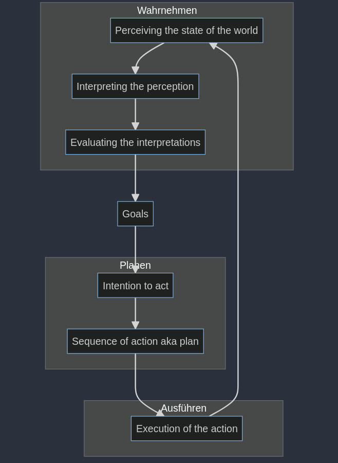
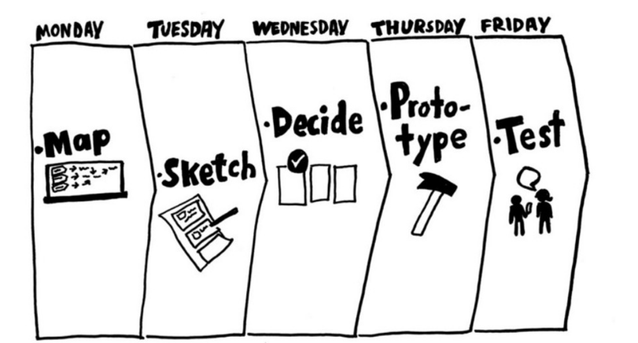
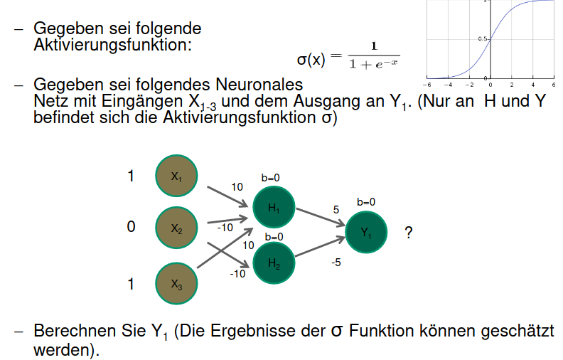
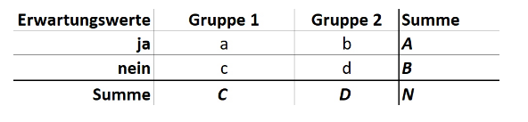

Human Computer Interaction
Human Computer Interaction (HCI) ist eine Disziplin, welche sich mit dem entwickeln, evaluieren und der Implementierung von interaktiven Systemen befasst. Als Grundlage dabei dient die Beobachtung des Umfelds. Wichtig an dieser Stelle zu erwähnen ist es, dass diese verschiedenen Diszipline sich in einem wiederholenden Entwicklungsprozess (User Centered Design Prozess, etc.) befinden. HCI besteht aus einer Vielzahl von unterschiedlichen Disziplinen:
- Design
- Psychologie
- Engineering
- Computer Science
Definitionserklärungen
Definition Usability
Usability definiert, wie einfach ein bestimmtes Produkt innerhalb eines Nutzungskontextes genutzt werden kann um einfach, effizient und zufriedenstellend die Ziele des Nutzers zu erreichen.
Definition Nutzungskontext
Beschreibt die physische und soziale Umgebung, in welcher ein Produkt verwendet wird. Ist das Produkt für die Umgebung geeignet, in der es verwendet wird?
Definition Effektivität
Genauigkeit und Vollständigkeit unter welchem der Nutzer das Ziel mit Hilfe des Computers erreichen kann. Beispielsweise der Grad der Zielerreichung in Prozent
Definition Effizienz
Aufwand mit welchem der Nutzer ein bestimmtes Ziel erreicht. Beispielsweise die Tastenanschläge pro Minute
Definition Zufriedenstellung
Freiheit von Beeinträchtigung und positive Einstellung gegenüber der Nutzung des Produktes.
Definition User Experience
Reaktion, Emotionen und Wahrnehmungen des Nutzers bei der Interaktion mit dem Produkt vor, während und nach der Nutzung.
WIMP
WIMP steht für Windows, Menus, Icons and Pointers in Bezug auf die Desktop Metapher
Desktop Metapher
Die Desktop Metapher stellt im Gegensatz zur Kommandzeile ein neuer Ansatz zur Interaktion mit dem Computer dar:
- Direkte visuelle Manipulation von Objekten
- Sichtbarkeit von Objekten und Aktionen
- Schnelle, umkehrbare Aktionen
 XEROX Star 1981
XEROX Star 1981
Vorteile im Gegensatz zur Kommandozeile
- Schnelles Erlernen und Wiedererinnern
- Fehleranfälligkeit durch Syntax wird vermieden
- Fördert exploratives Erforschen
Nachteile im Gegensatz zur Kommandozeile
- Teilweise geringere Effizienz
- Teilweise reduzierte Funktionen
Definition Natural User Interfaces
Umfasst alle Interaktionsformen, welche über WIMP hinausgehen und sich an den sensor motorischen Fähigkeiten des Menschen orientieren. Mit natürlich ist hierbei eine natürliche Eingabeform sowie eine selbsterklärende Bedienung gemeint.
Definition Ubiquitous Computing
Unter Ubiquitous Computing wird verstanden, dass der Computer allgegenwärtig und in unser Umfeld nahezu unsichtbar integriert ist.
Gulf of Execution
Kluft zwischen den beabsichtigten Handlungen und den möglichen Aktionen.
Gulf of Evaluation
Kluft zwischen den Ausgaben des Systems und der korrekten Interpretation
Irrtümer (Mistakes)
Falsche Handlungen zum Erreichen des Ziels.
Fehlleistungen (Slips)
Richtige Handlung falsch ausgeführt
Multimodale Interaktion
Multimodale Interaktion kombiniert zwei oder mehr Input Modi (beispielsweise Touch und Speech) miteinander.
Input Device State
Gibt an, in welchem Zustand die Input Geräte sind. Im Falle eines Button hat dieser beispielsweise die Zustände gedrückt sowie nicht gedrückt.
Interaktionsstyle
Grundsätzlich kann zwischen zwei verschiedenen Interaktionsstilen unterschieden werden. Dies ist zum Einen die Interaktion per Kommando via Kommandozeile und zum Anderen die Interaktion mittels Dialogen (GUIs).
DMI
Unter DMI wird Direkte Manipulation verstanden. Bei einem klassichen GUI wäre dies über Tastatur, Bildschirm und Maus, wobei Input und Output getrennt sind. Bei Smartphones hingegen ist der Input und Output direkt miteinander verbunden und wird via Touch oder Pen ermöglicht.
User-Centered Design Process
Der User-Centered Design Prozess bezweckt Produkte und Dienstleistungen zu entwickeln, welche reale Bedürfnisse der Nutzer adressieren.
Menschenzentriert
Menschenzentriert bedeutet, den Menschen kontinuierlich in den Prozess miteinzubeziehen.
User Experience Design
User Experience Design bietet einen systematischen, wissenschaftlich fundierten Ansatz, mit dem die Gebrauchstauglichkeit eines Produktes sichergestellt werden kann.
Buxton's Law
Buxton's Law besagt, dass der Mensch nur eine eingeschränkte kognitive Fähigkeit besitzt (Human Capacity). Der Mensch kann beispielsweise Kunden beraten, wenn er jedoch noch eine komplizierte Software bedienen muss, welche seine kognitiven Fähigkeiten übersteigt, funktioniert dies nicht.
Wireflows
Wireflows sind ein Designspezifikationsformat dass
Wireframesmit einemAblaufdiagrammkombiniert umInteratkion darzustellen.
Wireframes
Wireframes sind eine
vereinfachte Darstellung einer Benutzerschnittstelleund zeigen dasLayout in Form eines Drahtgerüstesauf.
Prototyp
Ein Prototyp ist ein
funktionsfähiges aber vereinfachtes Produktfür einenbestimmten Zweck. Es kann dabei reinäusserlich oder technischdem Endprodukt entsprechend.
User Experience Evaluation
Ist die Bewertung der User Experience einer Lösung in
Hinblick daruaf, wie gut sie die Benutzer unterstützt um ihre Ziele zu erreichen
Qualitative Studien
Liefern Daten über
Verhaltensweisen oder Einstellungenauf Grundlagedirekter Beobachtung. Sind gut geeignet um zu beantwortenwarum oder wie ein Problem zu lösen ist.
Quantitative Studien
Daten über Verhalten oder Einstellung werden
indirekt über eine Messungerhoben. Beantwortet die Frage nach demWieviel.
Natural Produktverwendung
Natürliche oder naturnahe Verwendung des Produktes. Kann über
Field Studies ermittelt werden.
Scripted Produktverwendung
Gezielte Nutzung des Produktes. Kann über
Usability Studies ermittelt werden.
Limited Produktverwendung
Begrenze Nutzung um einen
bestimmten Aspekt der Benutzererfahrung zu untersuchenKann überCard Sorting ermittelt werden
Decontextualized Produktverwendung
Keine Verwendung
des Produktes während der Studie. Kann über eineSurvey ermittelt werden.
Externe Validität
Ist das Testen des Produktes im
echten Umfeld, d.h. im Feld draussen
Interne Validität
Ist das Testen des Produktes in einer
sicheren und kontrollierten Umgebung, d.h. im Labor
FAQ
Welche Vorgänge finden bei zielgerichteten Handlungen statt und welche Arten von Fehlern können auftreten?
Bei zielgerichteten Handlungen finden die zwei Vorgänge Gulf of Evalutaion und Gulf of Execution statt.
Hierbei können Irrtümer (Mistakes) und Fehlleistungen (Slips) auftreten.
Was sind die Gemeinsamkeiten zwischen dem Design Thinking Prozess und dem User-Centered Design Prozess?
- Nutzerzentrierte Gestaltung
- Iterativer Prozess
- Ähnliche Methoden
Was sind die Unterschiede zwischen dem Design Thinking Prozess und dem User-Centered Design Prozess?
- UCD ist ein standardisierter Prozess
- Ziel des UCD ist es eine hohe Usability und User Experience für ein Produkt / Dienstleistung zu gewährleisten. Design Thinking auf die Entwicklung innovativer und kreativer Lösungen für komplexe Probleme zu.
- Design Thinking hat ein breiteres Anwendungsspektrum, UCD ist meist auf User Interfaces und bekannte Fragen beschränkt.
- Design Thinking erlaubt die Arbeit in multidisziplinären Teams
Warum ist UX für Unternehmen unverzichtbar?
- User Experience nimmt stetig an Bedeutung zu.
- UX reduziert die Ineffizienz bei der Entwicklung und bietet, wenn richtig angewandt, einen hohen Return on Investemnt
Warum nimmt UX immer mehr an Bedeutung zu?
Durch die immer voranschreitende und sich weiterentwickelnde Technik nimmt die Relevanz von digitalen Ergebnissen und somit auch UX immer stetig zu. Durch das immer stetig wachsende Produkt- und Serviceangebot erwarten Nutzer eine entsprechend hohe UX.
Warum reduziert UX die Ineffizienz bei der Entwicklung?
Durch den Einsatz von UCD wird rund 50% weniger Zeit für Anpassungen und Korrekturen von Produkten und Services verwendet. UX reduziert zudem Support und Schulungskosten, da die Nutzer in der Lage sind das Produkt intuitiv zu bedienen. Die Einbindung der Nutzer trägt zudem dazu bei, die Entscheidungsfindung zu verbessern und entsprechend die Prioritäten für Entwicklungsaufgaben zu setzen. Zudem kann dank Usability-Aktivitäten späte Änderungen am Produkt vermieden werden.
Warum führ UX zu mehr Erfolg?
Diverse Studien zeigen auf, dass wenn UX von Unternehmen gelebt und entsprechend berücksichtigt wird, sich die Gesamtrendite um rund 3.5 mal erhöht. Zudem distanzieren sich Markt-Leader markanntlich von den sogenannten "Customer Experience Laggards".
Warum führ UX zu mehr Return on Investment?
Laut einer Studie resultiert jeder investierte Dollar in UX in rund 100 Dollar. Dies entspricht einem Return on Investment von 99%.
Worum geht es bei der Betrachtung des Nutzers?
Bei der Betrachtung des Nutzers geht es darum, den Nutzer zu identifizieren und zu verstehen:
- Wer sind die Nutzer (Demografische Daten, Nutzergruppen, Besonderheiten, technisches Verständnis)
- Was sind die Ziele der Nutzer, was möchte der Nutzer erreichen
- Was sind die Bedürfnisse, Erwartungen und welche Frustrationen erwarten den Nutzer
Was ist das Problem bei Fragebögen?
Bei Fragebögen muss bereits Wissen über die Domäne vorhanden sein, zudem sind sie aufwändig zu erstellen und können viele unerwünschte Nebeneffekte herbeiführen.
Was zeichnet eine gute Informationsarchitektur aus?
Folgende drei Fragen sollten immer beantwortet werden können:
- Was tut diese Seite/Applikation?
- Was kann ich tun?
- Wo bin ich?
Was ist der Unterschied zwischen Sketches und Prototypes?
Sketches sind schnell, preiswert und einfach herzustellen und schlagen einen möglichen Designentwurf vor.
Prototypen hingegen sind bereits eine spezifische Darstellung eines möglichen Lösungsvorschlags.
Was ist das Ziel von User Experience Evaluation?
Die User Experience Evaluation orientiert sich an den Phasen des User Centered Design Prozesses. Die Hauptaufgabe besteht in der Fehlerkorrektur in den einzelnen Phasen.
Was ist der Unterschied zwischen Einstellung und Verhalten?
Einstellung ist was die Leute sagen, Verhalten ist was die Leute tun. Diese zwei Aspekte sind oft sehr unterschiedlich.
Geschichte von HCI
Die Geschichte von HCI kann in vier Bereiche eingeteilt werden.
Mainframe Ära
Die Mainframe Ära spielt in den 1960er Jahren. Zu dieser Zeit war es üblich, dass ein Computer mit mehreren Personen genutzt wurde. Einige wichtige Vertreter dieser Ära sind:
- ZUSE Z4 (1945)
- Fortran auf Lochkarten
In Bezug auf interaktive Systeme gab es ebenfalls ein paar nennenswerte Erfindungen.
Personal Computer Ära
Die Personal Computer Ära spielt in den 1980er Jahren. Hier war es üblich dass ein Computer pro Nuzter zur Verfügung stand.
Memex (1945)
Die Idee hinter Memex ist es einen Schreibtisch zu haben, welcher alle für den Nutzer notwendigen Informationen sofort zur Verfügung stellt. Dies entspricht als Metapher gedacht dem Desktop auf dem Computer.
 Memex
Memex
Sketchpad (1963)
Eines der ersten Sketchpad's wurde von Ivan Shuterland am MIT entwickelt und beinhaltete nebst dem eigentlichen Eingabestift folgende Möglichkeiten:
- Grafische Benutzeroberfläche
- GUI Editor mit Stylus
- Zooming
- Snap-to-Grid
- Copy, Paste & Templates
NLS (1968)
NLS (on-Line Systems) wurde erstmals von Douglas Engelbart im Rahmen einer Präsentation an der Standford University vorgestellt. Hierbei handelt es sich um eine Demo welche unter anderem folgende Dinge erstmalig vorgestellt hat:
- Maus und Mausbedienung
- Menu und Anwendungsfenster
- Keyboard und Textverarbeitung
Command Line
Zu Beginn gab es keine intuitiven Benutzeroberflächen, die meisten Befehle mussten per Hand in ein Terminal (Command Line) eingegeben werden. Dies erforderte teilweise Programmiererfahrung und konnte daher nicht von jedermann genutzt werden.
Abhilfe hierbei schaffte XEROX Parc
XEROX Star
Das erste Konzept des heute bekannten GUI (Graphical User Interface) wurde 1981 von XEROX Parc entwickelt und ist unter dem Namen XEROX Star bekannt.

XEROX Star
Apple Lisa (1983)
Der Apple Lisa gilt als einer der ersten Personal Computer, welcher eine grafische Benutzeroberfläche sowie über Keyboard und Maus verfügte.
Mobility Ära
Die Mobility Ära spielt in den 2000er Jahren. Hier war es üblich, dass pro Person mehrere Computer genutzt wurden.
Personal Digital Assistant (PDA)
Der PDA bezeichnet einen Rechner im Hosentaschenformat und einem Eingabestift. Die Bedienung erfolgte hierbei über ein LCD Display. Der PDA, auch Electronical Organizer genannt, gieng aus dem programmierbaren Taschenrechner hervor.
Interactive Surfaces
Geräte mit einer interagierbaren Oberfläche sind:
- Microsoft Surface
- iPad / iPhone
Ubiquity Ära
Die Ubiquity Ära spielt ab dem Jahr 2020. Die Idee hierbei ist, dass es pro Person mehrere tausende Computer gibt, in Form von Smartphones, Smartwatches etc. Ein zentrales Merkmal der Ubiquity Ära ist das Ubiquitous Computing. Ubiquitous Computing unterteilt die Computer in drei verschiedene Formfaktoren.
Boards (1m)
Unter Boards werden Displays mit einer Grösse rund 1m verstanden.
Pads (0.1m)
Unter Pads werden Displays mit rund 0.1m Durchmesser verstanden.
Tabs (1cm)
Unter Tabs werden Displays mit rund 1cm Durchmesser verstanden.
Themengebiete von Ubiquitous Computing
Ubiquitous Computing umfasst eine Vielzahl von verschiedenen Themengebieten, unter anderem:
- Smart Devices
- Natural User Interfaces
- Internet of Things
Verschiedene Arten von Interaktionsmöglichkeiten und UX
Localized Interaction
Hierbei werden einfache Interaktionen mit einem Gerät aus einer bekannten Umgebung des Nutzers verstanden. Die Interatkion ist dabei aufgabenbasiert, zeitlich limitiert und auf eine kurze Zeit begrenzt. Beispiele für localized Interactions sind:
- Das Prüfen von E-Mails am Computer
- Geld von einem Bankautomaten holen
Das Design folgt hierbei der Interaktion.
Activity-based Interaction
Ist ein Weg um Interaktionen zu beschreiben, welche über einfache Tätigkeiten hinausgehen. Eine Aktivität beschreibt hierbei eine Sequenz von Aufgaben, welche ebenfalls parallel oder überlappend sein können. Kurzum kann eine Activity-based Interaction folgende Elemente umfassen:
- Interaktion mit einem Gerät um verschiedene zusammenhängende Tasks zu erledigen
- Interaktion mit mehreren Geräten
System-spanning Interaction
System-spanning Interaction ist eine Art von Activity-based Interaction welche mehrere Personen, Rollen und Standorte umfasst.
 System spanning Interaction
System spanning Interaction
Pervasive Information Architecture
Die durchdringende Informationsarchitektur (auch Pervasive Information Architecture) ist eine Informationsschicht, welche sämtliche Kanäle und Nutzer zusammen verbindet. Sie bestimmt somit wie Nutzer Informationen sehen, verändern und miteinander teilen.
Single channel information design
Umfasst einen einzigen Kanal (Desktop, Laptop etc.). Heutzutage wird jedoch über viele verschiedene Kanäle kommuniziert.
Cross-channel Information design
Umfasst mehrere Geräte, Nutzer und Plattformen. Jeder Kanal befasst sich jedoch mit dem gleichen Nutzer und den gleichen Informationen. Cross-channel Information design ist der Vorläufer von Ubiquitous Computing und Embedded interaction.
Forschungsgebiete von HCI
Ein wichtiger Bestand von HCI ist der Mensch selbst. Der Mensch kann in abstrakter Weise mit dem Model Human Processor Modell beschrieben werden.
Human Processor Model
Das Human Processor Model besagt, dass ein Nutzer die Sinneseindrücke mithilfe eines Perceptual Processors verarbeitet und diese dann in zwei unterschiedliche "Speicher" ablegt. Zum einen gibt es den Visual Image Store, in welchem Dinge abgespeichert werden, welche wir sehen. Zum Anderen gibt es den Auditory Image Store, in welchem Dinge abgespeichert werden, welche wir hören. Diese zwei Speicher sind Bereiche des "Working Memory". Mit genug Übung etc. gehen diese in das "Long Term Memory" über. Zudem besteht eine Verbindung zum "Motor Processor" und zum "Cognitive Processor".
Human Processor Model
Seven Stages of Action
Die Seven Stages of Action beschäftigen sich primär mit drei Hauptfragen*:
- Wie kann man den Nutzer dabei unterstützen, die nächste Interaktion zu planen?
- Wie kann man den Nutzer dabei unterstützen, die nächste Interatktion auszuführen?.
- Wie kann man den Nutzer dabei unterstützen, den Zustand des Systems richtig wahrzunehmen?

Seven Stages of Action
UX Prozess und Lifecycle
Ursprünge des User-Centered Design Prozess
Der User-Centered Design Prozess wurde erstmalig von Don Norman im Jahr 1981 im Rahmen einer Veröffentlichung in der Zeitschrift "Datamation" erwähnt. In dieser Veröffentlichung thematisierte Don Norman die schlechte Nutzbarkeit von UNIX Benutzeroberflächen. Don Norman thematisierte seine Anhaltspunkte im Buch "The Design of Everyday Things", bei welchem es darum geht wie Nutzer mit zehn tausenden Objekten im Alltag zurechtkommen. Don Norman spricht sich zudem gegen traditionelle lineare Desigprozesse aus und befürwortet die Verwendung von iterativen Prozessen.

User Centered Design Process
Beobachten und Verstehen
Das Ziel dieses Schrittes ist es, den Nutzer, dessen Bedürfnisse und den Problemkontext zu verstehen. Hierzu sind folgende Aktivitäten notwendig:
- Contextual Inquiry
- Interviews
- Beobachtung
- Dairy Studies
Bedürfnisse spezifizieren
Das Ziel dieses Schrittes ist es die Bedürfnisse der Nutzer abzuleiten, zu dokumentieren und nutzbar zu machen. Hierzu sind folgende Aktivitäten notwendig:
- Affinity Diagram
- Kontext- und Nutzungsszenarien
- Personas
Ideen entwickeln
Das Ziel dieses Schrittes ist es, basierend auf den vorherigen Erkenntnissen eine Lösung für ein konkretes Problem / Bedürfniss zu entwickeln. Hierzu können folgende Aktivitäten angewendet werden:
- Kreativmethoden
- Sketching
- Szenarien
Design
Hier sollen anschliessend die Ideen und Konzepte in ein konzeptionelles Model sowie ein Interface basierend auf Interaktionsdesign, Informationsdesign sowie Visualdesign überführt werden. Folgende Aktivitäten können hierbei unterstützen:
- Cardsorting
- Informationsarchitektur
- Interatkionskonzept
- Moodboards
- Wireframes
- Flowdiagrams
Prototyping
Hier soll das Design in verschiedenen Varianten in Form von iteraktiv erfahrbaren Mockups und Prototypen überführt werden. Folgende Tätigkeiten können verwendet werden:
- Paper Prototypes
- Prototyping Tools
- Vertikale und Horizontale Prototypen in unterschiedlichen Ausprägungen
Evaluation
Das erstellte Artefakt soll auf die vorab definierten Ziele hin überprüft werden. Hierzu können folgende Evaluationsmethoden verwendet werden:
- Benutzerzentrierte Methode in Form eines Usability Tests
- Expertenorienterte Verfahren in Form einer Heuristischen Evaluation
Prinzipien des User-Centered Designs
- Design basiert auf dem expliziten Verständnis von Benutzern, Aufgaben und Umgebung
- Nutzer werden in Gestaltung und Entwicklung miteinbezogen
- Design wird durch die nutzerzentrierte Evaluation vorangetrieben und verfeinert
- Prozess ist iterativ
- Der Entwurft berücksichtigt die gesamte Nutzererfahrung
- Designteam umfasst multidisziplinäre Fähigkeiten und Perspektiven
Double Diamond
Das Double Diamond Modell wurde im Jahr 2004 entwickelt. Die Idee hinter dem Double Diamond Modell ist es, den Fokus bei den Schnittpunkten enger zu legen (sich auf bestimmte Aspekte zu fokussieren) und ansonsten den Fokus möglichst offen zu halten.

Double Diamond
Google Design Sprint
Der Google Design Sprint wurde von Google Ventures entwickelt. Der Prozess beinhaltet insgesamt 5 Schritte und dauert 5 Tage. Im Gegensatz zu Design Thinking und UCD handelt es sich aber beim Design Sprint nicht um eine Denkhaltung oder oder eine Sammlung von Methoden, sondern ein in sich abgeschlossener Prozess.

Google Design Sprint
Gemeinsamkeiten der Desing Prozesse
Obwohl es viele verschiedene Design Prozesse wie Szenario-based Development, Lean UX oder die oben genannten Punkte gibt, haben diese doch viele Gemeinsamkeiten. Bei allen lassen sich folgende Schritte (manchmal in einer leicht abgewandelten Form) wiederfinden:
- Verstehen
- Spezifizieren
- Ideen generieren
- Gestalten
- Prototyping
- Testen
UX Reifegradmodelle
UX Reifegradmodelle bieten eine Einschätzung hinsichtlich der Ausprägung der nutzerzentrieten Kultur im Unternehmen. Eine Übersicht über weitere Reifegradmodelle ist unter folgendem Link verfügbar.
UX Rollen
Innerhalb des UX Bereichs gibt es ebenfalls spezialisierte Rollen, welche hier kurz thematisiert werden.
UX Designer
Die Aufgabe des UX Designers ist das Entwerfen von benutzerfreundlichen Produkten, welche den Bedürfnissen der Endnutzer entspricht. Der UX Designer verwendet hierbei bekannte Methoden wie Prototyping und Wireframing. Hierbei sind folgende Aktivitäten von zentraler Bedeutung:
- Explorieren
- Gestalten und Konzipieren
- Prototyping und Testobjekte erstellen
- Implementierungsvorlagen erstellen
UX Researcher
Analysiert das Nutzerverhalten und bildet datengestützte Erkentnnisse, um die Bedürfnisse der Nutzer anzusprechen. Hierbei werden Methoden wie Usability Testing, Nutzerinterviews oder Customer Journeys verwendet. Die Tätigkeiten umfassen:
- Verstehen und Nutzerforschung
- Daten und Faktengrundlage schaffen
- Testen und UX Portfolio unterstützen
UX Manager
UX Manger sind für ein Produkt oder für eine User-Experience Design-bezogene Aktivität zuständig. Hierbei fallen folgende Aktivitäten an:
- Reifegradbestimmung und Überwachung
- UX der Produkte und Services messen
- Allignment zwischen UX und Business
- UX-Transformationsprozesse
- Definition der UX-Design-Sprache und -Strategie einer Organisation
UX Setups
Nebst den verschiedenen Rollen gibt es entsprechend auch verschiedene Konstellation (Setups).
UX-Einzelkämpfer
Der UX-Einzelkämpfer übernimmt alle anfallenden UX Rollen. Dies ist oft in kleineren Unternehmen mit einem geringen UX-Reifegrad der fall.
Zentrales UX-Team
Innerhalb eines UX-Teams arbeiten verschiedene Personen mit unterschiedlichen UX-Rollen zusammen. Dies ist mit über 80% die häufigste Konstellation und bietet folgende Vorteile:
- Guter inhaltlicher Austausch
- Teamleiter kann UX repräsentieren und vorantreiben
UX im Projekt- oder Produktteam
Dies ist oft bei agilen Setups wie SCRUM oder Kanban der Fall und bietet folgende Vorteile:
- Expertise liegt auf einem Produkt (da pro Produkt ein entsprechendes UX Team vorhanden ist)
- Nähe zu Business und Entwicklung
UX Integration bei agilen Setups
Oft ist es nicht einfach den UCD-Prozess in bereits bestehende agile Setups zu intergrieren, doch auch hier gibt es verschiedene Lösungswege.
UX in einem parallelen UX-Strang
- Startet ein Projekt neu wird im Rahmen des "Sprint 0" entsprechend User Research betrieben und ein Grobdesign erstellt
- Der Ablauf orientiert sich an der Sprintplanung, wobei jeweils dass im vorherigen Sprint erstellte Artefakt geprüft wird.

Paralleler UX-Strang
Nutzerforschung
Bei der Nutzerforschung ist es essenziell den Nutzungskontext zu verstehen. Der Grundansatz in der Nutzerforschung lässt sich in drei Teile unterteilen:
- Den Benutzer verstehen und versuchen die Dinge aus sicht des Nutzers zu sehen.
- Die Tätigkeiten des Nutzers lernen sowie verdeckte Abhängigkeiten und Prozesse verstehen.
- Den Nutzungskontext kennen, lernen sowie verstehen
Die Nutzerforschung dient also dazu Möglichkeiten für Verbesserungen / Neuerungen sowie Innovationen zu finden.
Tätigkeiten
Es ist von höchster Bedeutung, herauszufinden, was Nutzer tun und wie sie es tun. Hierzu gibt es verschiedene Möglichkeiten:
- Prozeduren und Vorgehensweise
- Routinen
- Konventionen
- Physische, manuelle und automatische Aktivitäten
Kontext
Zudem ist es wichtig, herauszufinden, wie der Kontext das System beeinflusst. Hierbei muss sowohl die physische, soziale und Organisationsumgebung berücksichtigt werden.
UX Research im Design Lifecycle
Typen von UX Research
Grundsätzlich kann zwischen zwei verschiedenen Arten von UX Research unterschieden werden. Zum Einen gibt es Generative User Research. Dies umfasst die Phasen Discover und Define. Zum Anderen gibt es Evaluative Research mit den Phasen Develop und Deliver. Vor der eigentlichen Entwicklung ist es hierbei wichtig, sich mit den Bedürfnissen der Nutzer auseinanderzusetzen und herauszufinden was funktioniert und was nicht. Hierzu können folgende Aktivitäten verwendet werden:
- Interviews
- Focus Groups
- User Interviews
Während der Entwicklung muss stetig überprüft werden, ob man auf dem richtigen Weg ist und ob das richtige Produkt entwickelt wird. Dies kann mit folgenden Aktivitäten erreicht werden:
- Card Sorting
- Tree Testing
- Prototype Testing
Nach der Entwicklung muss geprüft werden, wie gut die Ziele und die Nutzerbedürfnis abgedeckt worden sind:
- A/B Testing
- Diary Studies
- Moderiertes und unmoderiertes User Testing
Design Lifecycle
Ziel des Design Lifecycles ist es, die Domäne zu verstehen. Hierzu wird oft im Vorfeld eine Usage Research betrieben (Contextual inquiry und Contextual analysis) sowie entsprechende User Stories und Anforderungen definiert. Wichtig hierbei ist, dass der Design Lifecycle ein sich wiederholender Prozess ist.
Design Lifecycle
Systemkomplexität und Projekt Parameter
Um die Systemkomplexität und das Projekt richtig einschätzen zu können, ist im Vorfeld eine Anforderungesanalyse notwendig. Bei der Anforderungsanalyse ist es wichtig dass der Mensch und seine Bedürfnisse im Mittelpunkt steht.
Erfassung der Systemkomplexität
Die Systemkomplexität kann in vier Quadranten unterteilt werden:
- Einfache Interaktionskomplexität und einfache Domäne (
unterer linker Bereich) Beispiele hierfür sindWebseiten für Blumengeschäfte - Hohe Interaktionskomplexität und anspruchsvolle Domäne (
oberer rechter Bereich) Beispiele hierfür sindFlugsysteme - Hohe Interaktionskomplexität und einfache Domäne (
oberer linker Bereich) Beispiele hierfür sindItunes, Digital Watches etc. - Einfache Interaktionskomplexität und anspruchsvolle Domäne (
unterer linker Bereich) Beispiele hierfür sindSteuersoftware

System Komplexität
Handhabung von Projekt Parametern
Jedes Projekt hat gewisse Vorgaben bzw. Parameter. Die Kunst besteht darin, diese Projekt Parameter wie Projekt Risiken, Projekt Ziele etc. den geeigneten UX Methoden zuzuordne den geeigneten UX Methoden zuzuordnen. Folgende Dinge lassen sich hierbei steuern:
- Welche
Entwicklungsaktivitätengetätigt werden müssen - Welche
Methoden und Technikenfür das Erreichen der Projekt Parameter eingesetzt werden - Die Anzahl der
notwendigen Iterationen
Affinity Diagramme, Personas und Szenarien
Bevor Affinity Diagramme, Personas oder Szenarien gebildet werden können, ist im Vorfeld eine Analyse notwendig.
Die Analyse kann hierbei in drei unterschiedliche Schritte unterteilt werden.
Strukturierung der Rohdaten
Um Rohdaten zu strukturieren können beispielsweise Activity Notes sowie Activity Diagramme genutzt werden.
Activity Notes
Das Ziel von Activity Notes ist es aus Rohdaten wie Interview Transkripte, Video / Audio Aufnahmen die relevanten Nutzerinformationen zu extrahieren.
Das Vorgehen lässt sich hierbei in folgende Schritte unterteilen:
- Durchgehen des Interviews im Team
- Durchgehen von Notizen und Aufzeichnungen
- Extraktion der
zentralen Kernpunkte und Aktivitätendies umfasstInformationen und Tätigkeiten des Nutzers,Nutzungskontexte und Design Ideen
Aus diesen Punkten werden anschliessend Post-Its (Activity Notes) erstellt. Jede Activity Note soll hierbei durch ein User Statement untermauert werden.
Affinity Diagramme
Ziel von Affinity Diagrammen ist es aus Activity Notes ein zusammenhängendes Bild zu erstellen. Eine Affinity ist somit eine Gruppierung von Activity Notes und bringt so eine Struktur hinein.
Konsolidieren, Visualisieren und Kommunizieren
Personas
Personas repräsentieren fiktive Nutzer, welche aber reale Nutzereingenschaften besitzen. Personas fokussieren sich auf gewisse Aspekte, welche im Kontext des Designs der Anwendung relevant sind.
Das Ziel von Personas ist es:
Empathie beim Designerzu generieren(Engaging)Ziele des Nutzerszu repräsentieren(Goal-directed)Funktion und Verhaltendes Nutzers zu repräsentieren
Eine Persona beinhaltet folgende Aspekte:
- Name, Foto und Beschreibung des Berufs und der Freizeitbeschäftigung
- Hintergrundinformationen
- Ziele, Bedürfnisse und Erwartungen für das konkrete Produkt
- Aufgaben und Tätigkeiten
- Was die Person motiviert, bzw. demotiviert
Wichtig hierbei ist, dass keine Persona exakt gleich einer anderen Persona ist.
Szenarios
Mit Hilfe der erstellten Persona können anschliessend unterschiedliche Szenarios erstellt werden.
Szenarios sind kurze Geschichten über Personas und deren Aktivitäten im Kontext des Produktes. Szenarios fokussieren sich hierbei auf Nutzerziele, Aktivitäten und Objekte.
Das Ziel bei Szenarios ist es:
Eine Systemunabhängige Beschreibung der Nutzerzielezu erstellen- Sollen dabei helfen
sich auf die Nutzerziele zu konzentrieren anstelle des Systems - Sollen den Fokus auf die
Aufgabenangemenssenheit lenken
Szenarios beinhaltet folgende Punkte:
Setting, d.h. Beschreibung der AusgangssituationAkteure, d.h. involvierte PersonasAktionenoder welche Schritte die Personas durchführenEreignissewas zwischenzeitlich passiertObjektebzw. welche Artefakte involviert sind
Interaction Design
Interaction Design beschäftigt sich mit der Gestaltung von Mensch-Maschine-Schnittstellen. Am Anfang steht meist eine Idee, damit diese jedoch in ein Produkt verwandelt werden kann, muss hierbei vom Abstrakten zum Konkreten gearbeitet werden.
Eine bekanntes Modell hierfür ist das Garret 5S Modell mit den Teilbereichen Strategy, Scope, Structure, Skeleton und Surface.
Strategy und Scope
Hier kann mit Personas und Szenarios angesetzt werden.
Structure
Um die Struktur zu validieren gibt es verschiedene Vorgehensmethoden.
Informationsarchitektur (IA)
Das Ziel einer Informationsarchitektur ist es Informationen so zu strukturieren, dass diese möglichst einfach gefunden werden können.
Die Informationsarchitektur umfasst hierbei:
Sinnvolle Unterteilungaller InhalteBeziehungzwischen den Inhalten aufzeigen
Achtung IA und Navigationsdesign sind nicht dasselbe:
- Die IA
bestimmt das Design der Navigationund das Navigationsdesign ist nur dieSpitze des Eisbergs. - Die IA ist eine
abstrakte Beschreibung der Organisation der Inhalte - Die Navigation beschreibt
die Zugänge zu den Inhalten
Eine Informationsarchitektur kann mit folgenden Schritten erstellt werden:
- Definieren von Zielen
- Zusammentragen der Inhalte
- Denkweise der Nutzer untersuchen
- Struktur und Ordnung schaffen
- Verständliche Bezeichnungen suchen
Card Sorting
Eine weitere Methode Struktur zu erreichen ist das Anwenden von Card Sorting. Dieses kann entweder open, closed oder reversed (Tree Testing) angewendet werden.
Beim open Cardsorting werden die Inhaltskategorien sowie die Kategorien selbst von den Teilnehmern vorgeschlagen.
Beim closed Cardsorting sind die Navigationsbegriffe definiert und die Teilnehmer ordnen die Inhalte den entsprechenden Kategorien zu.
Beim reversed Cardsorting besteht die Struktur bereits und die Teilnehmer bekommen Aufgaben, wobei sie durch die Seite navigieren müssen.
Flow
Da die Informationsarchitektur nur den strukturellen Aufbau der Informationen bestimmt, muss für die Nutzernavigation selbst noch der Flow angewendet werden.
Daher ist es wichtig, dass der Designer immer sowohl die Informationsarchitektur, als auch den Flow im Auge behält.
Um den Flow zu bestimmten gibt es wieder verschiedene Herangehensweise.
Process Map
Eine Process Map ist ein Flow Diagramm, und dient dem Verstehen eines Prozesses. Hierbei werden Informationsflüsse, Teilnehmer sowie Interaktionen aufgezeigt.
Beim Erstellen einer Process Map sollten folgende Punkte beachtet werden:
- Prozessschritte abbilden
- Eventualitäten beachten
- Start- und End-Punkt definieren
Skeleton (Layout)
Um ein Layout zu gestalten gibt es verschiedene Techniken und Methoden.
Wireframe
Wireframes sind eine weitere Ausarbeitung von Skizzen oder Papierprototypen. Somit sind Wireframes im Gegensatz zu Skizzen wesentlich detaillierter und bieten meist schon Content.
Heuristiken für das Interaction Design
Für das Interaction Design existieren rund 10 verschiedene Heuristiken
Visibility of System Status- Das System soll jederzeit klarmachen was es gerade macht, jede Aktion erfodert auch eine Reaktion des SystemsMatch between system and the real world- Das System sollte die Sprache des Nutzers sprechen und nur Konzepte verwenden, welche dieser auch verstehtUser control and freedom- Der Nutzer sollte das System jederzeit steuern können und auch damit experimentieren, eine Rückgängig-Funktion ist entscheidendConsistency and standards- Elemente der Benutzeroberfläche sollten einheitlich seinError prevention- Das System muss Fehlbedienung vorhersehen und entsprechend abfangenRecognition rather then recall- Der Nutzer sollte sich keine Informationen auf einem vorherigen Screen merken müssen, sämtliche relevante Informationen sollten direkt ersichtlich seinFlexibility and efficiency of use- Nutzer sollten die Möglichkeit haben den Arbeitsablauf mithilfe von Makros, Tastenkürzel etc. an ihre Bedürfnisse anpassen zu könnenAesthetic and minimalist design- Das System sollte nur Dinge anzeigen, welche für die aktuelle Aufgabe notwendig sindHelp users recognize, diagnose and recover from errors- Fehlermeldungen sollten klar formuliert sein und einen Lösungsweg aufzeigenHelp and documentation- Ein System sollte im Idealfall keine Hilfestellung benötigen, wenn doch dann muss die Hilfe einfach zugänglich gemacht werden
Prototyping
Das Prototyping kann in unterschiedlichem Detaillierungsgrad betrieben werden:
Physical Device Prototype- Knetprototyp des ProduktesPaper Prototypes- Prototyping mit Papier und SchereInteractive Prototypes- Prototyping mit Tools wie Figma etc.
Low- und High-Fidelity Prototyping
Die Fidelity beschreibt die Wirklichkeitstreue eines Prototyps. Dies kann in unterschiedlichen Bereichen passieren:
- Abstraktion
- Farbe und Form
- Interaktivität
Der Low-Fidelity Prototyp (bswp. Paper Prototypes) ist ein stark vereinfachtes Abbild des realen Produktes. Dafür ist er jedoch schnell und billig herzustellen
Der High-Fidelity Prototyp hingegen ist eine zielnahe Abbildung des Endproduktes. Dies kann durch die Wahl von Farben, Schriften, Bilder und Interaktion erreicht werden.
Für die Implementierung eines High-Fidelity Prototyps sind jedoch entsprechende Fachkenntnisse nowendig.
Prototypen helfen dem Designer dabei seine Kreativität und das Generieren von Ideen zu fördern. Zudem Erlauben sie das frühe Erkennen von Restriktionen.
Anwendungsgebiete
Prototypen können in unterschiedlichsten Tests angewendet und validiert werden:
- Usability-Studie
- Informelles Nutzerfeedback
- Guerilla User Testing
User Experience Evaluation
Bei der User Experience Evaluation gibt es zwei Formen von Evaluationsmethoden. Nebst diesen Evaluationsformen sollten auch quantitative und qualitative Aspekte berücksichtig werden.
Expertenorientierte Verfahren
Sind eine Analyse eines Designs durch UX-Experten mit dem Ziel Usability-Probleme und Stärken zu identifizieren.
- Günstige Variante und keine spezielle Ausrüstung oder Labor notwendig
- Problemliste steht unmittelbar nach der Inspektion zur Verfügung
Subjektivda sie auf den Meinungen und Vorurteilen des Experten beruhen
Nutzerbasierte Verfahren
Es werden reale Nutzer mit dem Problem konfrontiert und beobachtet wie sie sich verhalten. Dies ermöglicht Rückschlüsse über Stärken und Schwächen.
- Einziger
echter nutzerzentrierte Ansatz - Umfassender und
objektiv
Qualitativ
- Subjektiv und interpretativ. Es geht um das
Warum - Forscher sieht sein
Vorverständnisalsrevidierbaran - Daten werden auf
Gemeinsamkeiten hin analysiert
Quantitativ
- Objektiv und auf
Fakten ausgerichtet. Es get um dasWas passiert wie oft - Forscher möchte
Hypothesen überprüfen - Daten werden auf
Unterschiede hin analysiert
Einsatzzeitpunkte
Während der Entwicklung eines Produktes gibt es verschiedene Einsatzzeitpunkte und entsprechend geeignete Research Methodiken
Generative Research Methods
Das Ziel ist es neue Richtungen und Möglichkeiten zu finden:
- Field Studies
- Diary Studies
- Interviews
- Participatory Design
Formative Research Methods
Das Ziel ist es die Usability oder das Design zu verbessern:
- Card Sorting
- Tree Testing
- Usability Testing / Remote Testing
Mögliche Fragen wären zum Beispiel:
- Welche Probleme gibt es in der Benutzerfreundlichkeit unserer Schntitstelle?
- Verstehen die Nutzer unsere Navigation?
- Entspricht unsere Benutzeroberfläche den anerkannten Grundsätze der Benutzerfreundlichkeit?
Summative Research Methods
Das Ziel ist es die Performance gegen sich selbst oder Konkurrenten zu messen:
- Usability Benchmarks
- Unmoderiertes User Testing
- A/B Testing
- Analytics
Mögliche Fragen wären zum Beispiel:
- Wie schneidet unsere Schnittstelle im Vergleich zu unserern Wettbewerbern ab?
- Ist das Produkt gut genug, um es auf den Markt zu bringen?
Evaluationsmethoden
Usability Test
Testpersonen bearbeiten mit dem zu untersuchenden Produkt realistische Aufgaben und werden hierbei von Usability Experten beobachtet. Hieraus können Probleme etc. erkannt werden.
- Nutzer sollten
basierend auf der Zielgruppe rekrutiert werden(in der Regel 5-8 Personen) - Im Test gefundene
Probleme sollten auf die gesamte Zielgruppe übertragbar sein
Remote Usability Test
- Verlegung vom Labor ins Web, d.h.
Probanden und Testleiter sind räumlich getrennt - Probanden befinden sich
im natürlichen Umfeld, es kann daher mitnatürlichen Ergebnissen gerechnet werden - Anwendungsfälle sind beispielsweise
schwer zu erreichende Testpersonen oder eine grosse Anzahl von Personen
Card Sorting / Tree Testing
Ist eine Methode um die Struktur und Navigation einer Website / Anwendung zu verbessern:
- Teilnehmer erhalten
Begriffe, welche sie inKategorien sortieren und umbennen müssen - Beim Tree Testing werden die
Kategorien sowie Unterkategorien vorgegeben
UX Fragebogen / UX Survey
- Eine Umfrage erlaubt es
Informationen von StichprobenüberEinstellung, Überzeugungen etc. zu sammeln - Umfragen können online, telefonisch oder persönlich durchgeführt werden und werden eingesetzt
um in relativ kurzer Zeit Daten von vielen Personen zu erheben - Umfragen können sowohl
strukturiert als auch unstrukturiertdurchgeführt werden. - Bei
strukturierten Umfragenwerdenvorgegeben Frage und Antwortmöglichkeiten verwendet - Bei
unstrukturierten Umfragenwerdenoffenere Fragen gestellt - Es gibt standardisierte Fragebögen wie
UEQ, AttrakDiff2 und SUS
A/B Test
Ist eine empirische Methode, bei welcher zwei Varianten miteinander verglichen werden:
- Es muss eine
entsprechende Kerngrösse definiert werden für die Messung - Teilnehmer werden
in zwei Gruppen aufgeteilt (Variante A und Variante B)
Cognitive Walkthrough
Es handelt sich um eine expertenorientierte / analytische Evaluationsmethode, bei welcher die `Erlernbarkeit eines Produktes im Fokus steht:
- Werden bereits in
frühen Phasenangewendet - Walkthrough bedeutet,
dass im Vorfeld bereits typische Handlungsabhläufe festgelegt werdenund diese dann im Rahmen einerEvaluation chronologisch untersucht werden
Der Cognitive Walkthrough lässt sich in folgende Phasen unterteilen:
- Telinehmer - UX Experten, Entwickler, Fachexperten
- Perspektive definieren - Persona wählen, Task wählen und Sequenzen definieren
- Fragestellungen auswählen
- Workshop durchführen
(innerhalb im Team)
Heuristic Evaluation
Eine Reihe von Experten überprüfen ob das User Interface komform zu anerkannten Prinzipien ist:
- Prinzipien werden Heuristiken genannt und sind
Richtlinien für die anwenderfreundliche Gestaltung von Benutzerschnittstellen - Ein bekanntes Beispiel sind die
10 Usability Heuristiken von Nielsen
10 Usability Heuristiken von Nielsen
- Sichbarbkeit des Systemstatus
- Weitgehende Übereinstimmung
zwischen System und der realen Welt - Benutzerkontrolle und Benutzerfreiheit
- Konsistenz und Standards
- Fehlervermeidung
- Wiedererkennung statt Erinnerung
- Flexiblität und Effizienz
- Ästhetik und minimales Design
- Hilfe beim Erkennen, Diagnostizieren und Bewältigen von Fehlern
- Hilfe und Dokumentation
Mögliche Prüfungsfragen
Was versteht man unter Usability?
Usability definiert, wie einfach ein bestimmtes Produkt innerhalb eines Nutzungskontextes genutzt werden kann um einfach, effizient und zufriedenstellend die Ziele des Nutzers zu erreichen.
Wie misst man Usability?
Die Usability kann beispielsweise mit den 10 Heuristiken von Nielsen gemessen werden:
- Sichbarbkeit des Systemstatus
- Weitgehende Übereinstimmung
zwischen System und der realen Welt - Benutzerkontrolle und Benutzerfreiheit
- Konsistenz und Standards
- Fehlervermeidung
- Wiedererkennung statt Erinnerung
- Flexiblität und Effizienz
- Ästhetik und minimales Design
- Hilfe beim Erkennen, Diagnostizieren und Bewältigen von Fehlern
- Hilfe und Dokumentation
Was ist UX?
UX bedeutet User Experience und umfasst sowohl die aktuelle, als auch vor- und nachgelagerte Nutzung.
Was ist UI?
UI steht für Graphical User Interface.
Unterschied zwischen HCI und Interaction Design?
Interaction Design beschäftigt sich mit der Gestaltung von Mensch-Maschine-Schnittstellen. HCI ist umfassender und beschäftigt sich mit dem entwickeln, evaluieren und der Implementierung von interaktien Systemen.
Unterschied zwischen UX und Usability?
Usability untersucht nur die Gebrauchstauglichkeit.
Wie wird Usability gemäss ISO 9241-11 definiert?
Es wird Effizient, Effektivität und Nutzerzufriedenheit gemessen
Was bedeutet Effektivität, Effizient und Zufriedenheit?
Effektivität ist die Genauigkeit und Vollständigkeit unter welchem der Nutzer das Ziel mit Hilfe des Computers erreichen kann. Beispielsweise der Grad der Zielerreichung in Prozent.
Effizient ist der Aufwand mit welchem der Nutzer ein bestimmtes Ziel erreicht. Beispielsweise die Tastenanschläge pro Minute.
Zufriedenheit ist die Freiheit von Beeinträchtigung und positive Einstellung gegenüber der Nutzung des Produktes.
Welches sind die Vor- und Nachteile von Direct Manipulation?
Unter DMI wird Direkte Manipulation verstanden. Bei einem klassichen GUI wäre dies über Tastatur, Bildschirm und Maus, wobei Input und Output getrennt sind. Bei Smartphones hingegen ist der Input und Output direkt miteinander verbunden und wird via Touch oder Pen ermöglicht.
Der Vorteil ist, dass es nicht mehr zwei Geräte braucht um die Eingabe und Ausgabe zu ermöglichen.
Was bedeutet WIMP?
WIMP steht für Windows, Menus, Icons and Pointers in Bezug auf die Desktop Metapher
Was sind die Vorteile der Desktop Metaphor gegenüber CLI?
- Schnelles Erlernnen und Wiedererinnnern
- Fehleranfälligkeit durch Syntax wird vermieden
- Fördert exploratives Erforschen
Was sind die Seven Stages of Action?
- Wie kann man den Nutzer dabei unterstützen, die nächste Interaktion zu planen?
- Wie kann man den Nutzer dabei unterstützen, die nächste Interatktion auszuführen?.
- Wie kann man den Nutzer dabei unterstützen, den Zustand des Systems richtig wahrzunehmen?
Was versteht man unter dem Gulf of Execution und dem Gulf of Evaluation?
Der Gulf of Execution ist die Kluft zwischen den beabsichtigten Handlungen und den möglichen Aktionen.
Der Gulf of Evaluation ist die Kluft zwischen den Ausgaben des Systems und der korrekten Interpretation
Aus welchen Phasen besteht der UCD Prozess?
- Beobachten und Verstehen
- Bedürfnisse spezifizieren
- Ideen entwickeln
- Design
- Prototyping
- Evaluation
Was versteht man unter Natural User Interfaces?
Umfasst alle Interaktionsformen, welche über WIMP hinausgehen und sich an den sensor motorischen Fähigkeiten des Menschen orientieren. Mit natürlich ist hierbei eine natürliche Eingabeform sowie eine selbsterklärende Bedienung gemeint.
Was ist der Unterschied zwischen Design Thinking und User Centered Design?
- UCD ist ein
standardisierter Prozess - Ziel des UCD ist es eine
hohe Usability und User Experience für ein Produkt zu gewährleisten - Design Thinking setzt
die Entwicklung innovativer und kreativer Lösungen für komplexe Probleme - Design Thinking hat ein
breiteres Anwendungsspektrum und erlaubt das Arbeiten in multidisziplinären Teams
Was ist UX Maturity?
UX Maturity ist eine Einschätzung hinsichtlich der Ausprägung der nutzerzentrierten Kultur im Unternehmen Hierbei gibt es verschiedene Reifegradmodelle:
- Jakob Nielsen
- Weichert
Was sind die Vor- und Nachteile / Herausforderungen von UX im Projekt- oder Produktteam?
Um UX in agilen Setups zu integrieren gibt es Lösungen (beispielsweise UX in einem parallelen UX Strang):
- Startet ein Projekt neu wird im Rahmen des "Sprint 0" entsprechend User Research betrieben und ein Grobdesign erstellt
- Der Ablauf orientiert sich an der Sprintplanung, wobei jeweils dass im vorherigen Sprint erstellte Artefakt geprüft wird.
Was beschreibt Buxton's Law?
Buxton's Law besagt, dass der Mensch nur eine eingeschränkte kognitive Fähigkeit besitzt (Human Capacity). Der Mensch kann beispielsweise Kunden beraten, wenn er jedoch noch eine komplizierte Software bedienen muss, welche seine kognitiven Fähigkeiten übersteigt, funktioniert dies nicht.
Welche Grundsätze hat User Research?
User Resarch kann dabei helfen Fragen in Bezug auf natürliche, de-kontextualisierte und vorgeschriebene Nutzung eines Produktes zu evaluieren
Was ist ein Affinity Diagramm?
Ziel von Affinity Diagrammen ist es aus Activity Notes ein zusammenhängendes Bild zu erstellen. Eine Affinity ist somit eine Gruppierung von Activity Notes und bringt so eine Struktur hinein.
Research Design and Qualitative Methods
Literature Review
Ist die Darstellung des
aktuellen Forschungsstandesin einemspezifischen Forschungsgebiet. Das Literature Review basiert hierbeiauf bereits veröffentlichter Forschungund stellt eineSynthese dieser dar. Hierbei wird der Fokus auf die GebieteForschungsergebnisse,Forschungsmethoden,TheoriesowiePraxis und Anwendunggelegt.
Idiographische Forschung
Forschung, die sich auf den Einzelfall bezieht, d.h. der Fall steht im Vordergrund
Nomothetische Forschung
Gegenstück zur idiographischen Forschung, d.h. die Theoriebildung und Prüfung steht im Vordergrund
Forschungsprozess
Zu Beginn einer Forschung steht der Forschungsprozess
Themenfindung und Spezifizierung der Fragestellung
Zu Beginn muss das Thema und die damit verbundene Fragestellung gefunden werden, hierbei gilt es folgende Fragen zu klären:
- Welches
Phänomenaus der Realität interessiert mich? - Welches
Zielverfolge ich? - Welche Fragestellung ist
relevantzu untersuchen (wissenschaftliche Relevanz, basierend auf einerLiteraturrecherche)?
Der Themenfindungsprozess kann in folgende Schritte unterteilt werden:
- Oberthema
- Themenspezifizierung
- Forschungsziel
- Forschungsleitende Fragestellung
Literature Review / Literaturanalyse
Ein Literature Review ist eine Methode um den aktuellen Forschungsstand aufzuarbeiten und eine entsprechende Synthese zu bilden.
Hierbei können folgende Ziele erreicht werden:
- Ableitung von
Generalisierungenwichtig für dieHypothesenbildung - Erklärung von verschiedenen
konfliktären Ideendurchneue Konzepte und Annahmen - Aufzeigung von
Forschungslücken
Beim Literatur Review ist es wichtig, dass eine inhaltliche Verdichtung stattfindet und reines Nacherzählen vermieden wird.
Auch sollten wörtliche Übersetzungen des Originals vermieden werden.
Literaturübersicht
Zu Beginn ist es wichtig dass eine Übersicht über die vorhandene Literatur erstellt wird. Hierbei sollte untersucht werden welche Theorien relevant sind und was für Erkenntisse die bisherige Forschung bietet. Hierbei kann folgendermassen vorgegangen werden:
- Auswahl der richtigen
Datenbank - Festlegung des
Suchalgorithmus(Suche mittels "begriff" oder begriff*) Einschränkungenvornehmen (geografisch, zeitlich etc.)- Eingehende
Analyseund Lesender Abstracts - Systematischer Überblick verschaffen (Anzahl relevanter Studien, verwendete Methoden, Erscheinungszeitraum etc.)
Die Literaturrecherche ist ein iterativer Prozess und sollte daher gründlich gemacht werden.
Lesetechniken
Die Lesetechnik ist abhängig von der Phase:
Explorative Phase- Überblick über Themen erhalten, Relevante forschungsleitende Fragestellung definiertenFokussierte Phase- Suche nach spezifischen Informationen für die eigene Argumentation
SQ3R
Die SQ3R Methode kann in die Bereiche Survey, Question, Read, Recall und Review aufgeteilt werden:
- Survey - Text überfliegen und die Relevanz erfassen
- Question -
Vor dem Lesensollten eigene Fragen formuliert werden - Read - Sorgfälltiges Lesen
- Recall und Review - Teilabschnitte sollten in
eigenen Wortenin1-2 Sätzen zusammengefasst werden
Folgende Fragestellungen gelten hierbei als relevant für die Reflexion des Textes:
- Was ist das
zentrale Element des Autors? - Welche
Schlussfolgerungenzieht der Autor? - Welche
Belege gibt es und sind diese relevant? - Inwiefern können die Annahmen des Autors
in Frage gestellt werden und in welchem Kontext stehen diese?
Begriffe definieren
Es gibt zwei verschiedene Arten von Begriffsdefinitionen. Zum einen gibt es Realdefinitionen, welche das wahre Wesen einer Sache erfassen wollen. Zum Anderen gibt es Nominaldefinitionen, welche eine Konvention (Abstraktion) bieten.
Begriffsdefinition sind notwendig:
- Um ein einheitliches Verständnis zu schaffen
- Die korrekte Methodenwahl und Operationalisierung zu ermöglichen
- Den Gültigkeitsbereich zu definieren
Forschungsfrage und Hypothesen ableiten
Um eine korrekte Ableitung zu ermöglichen, ist eine solide Literaturanalyse unabdingbar. Zu Beginn steht ein Forschungsthema. Dieses definiert den Interessensbereich und begründet, warum das Thema relevant ist.
Anschliessend folgt das Forschungsproblem welches die Aspekte definiert, welche untersucht werden sollen und Forschungslücken aufzeigt.
Schlussendlich kann daraus die Forschungsfrage und Hypothese abgeleitet werden. Die Forschungsfrage bricht die forschungsleitende Fragestellung herunter.
Hypothesen
Hypothesen sind Aussagen über Effekte, Zusammenhänge oder Unterschiede, welche aus der Theorie / Studien logisch abgeleitet werden.
Hypothesen werden durch statistische Tests (quanitative Methoden) bestätigt oder abgelehnt.
Hypothesen beinhalten Annahmen über:
- Art der Relation
- Richtung der Relation
- Veränderung der Relation
Hypothesen können in unterschiedlichen Arten auftreten. Wichtig Unterschiede oder Zusammenhänge können gerichtet oder ungerichtet sein. Ungerichtet bedeutet, dass es einen Zusammenhang / Unterschied gibt. Gerichtet bedeutet dass Variable A grösser oder kleiner als Variable B ist oder einen positiven oder negativen Effekt darauf ausübt.
Zudem kann es bei Hypothesen noch Mediations und Moderationsvariablen geben. Mediationsvariablen vermitteln zwischen A und B und spezifizieren den Mechanismus der Beziehung.
Moderationsvariablen beschreibt den Effekt von A auf B aber nicht umgekehrt.
Unterschiedshypothesen
Unterschiedshypothesen untersuchen den Unterschied zwischen zwei oder mehr Gruppen:
- Unabhängige Variable (UV) = Gruppierungsvariable
- Abhängige Variable (AV) = Merkmal
auf dem sich der Unterschied zeigen soll
Zusammenhangshypothese
Zusammenhang zwischen zwei oder mehr Variablen ohne Ursache-Wirkung-Annahme:
- Variable A korreliert mit B aber es ist nicht definiert ob sie einen Einfluss aufeinander haben
Kausalhypothese
Zusammenhang zwischen zwei oder mehr Variablen mit Ursache-Wirkung-Annahme:
- Unabhängige Variable (UV) = Prädiktorvariable (erklärende Variable)
- Abhängige Variable (AV) = Kriteriumsvariable (zu erklärende Variable)
Forschungsfragen
Forschungsfragen kommen dann zum Einsatz, wenn eine Hypothesenbildung nicht möglich ist. Es werden hier häufig W-Fragen verwendet.
Operationalisierung
Operationalisierung erlaubt es latente und theoretische Konstrukte messbar zu machen. Dies erfolgt durch das Bestimmen von Indikatoren, welche zum Beispiel von etablierten Studien und geprüften Skalen abgeleitet werden können.
Hierbei sollte zuerst eine Operationale Definition vorgenommmen werden. Diese überführt die Begriffe in der Hypothese in Forschungsoperationen:
- Dimensionsanalyse - Zerlegugn der Begriffe in die verschiedenen Dimensionen
- Indikatorenauswahl - Auswahl
valider, beobachtbarerIndikatoren für die Dimension - Operationalisierung -
Messbarmachung der IndikatorenundBestimmung des Messniveaus, das Resultat sind dieMesskonstrukte
Skalen
Skalen sind ein Satz von Skalen-Items (Fragen etc.), die dazu dienen ein latentes Merkmal zu messen.
Indizes
Ein Index erfasst ein komplexes theoretisches Konstrukt mit Hilfe eines Satzes von Indikatorvariablen. Beispiele für einen Index sind das BIP, Demokratie oder Gewaltindex.
Bildung theoretischer Konstrukte quantitative vs. qualitative Forschung
Die quantitative Forschung geht von der theoretischen Ebene auf die empirische Ebene:
- Schritt 1: Konzeptspezifizierung und Hypothesenbildung
- Schritt 2: Entwicklung standardisierter Messinstrumente
- Schritt 3: Datenerhebung und Rückschlüsse auf Gültigkeit der Hypothesen
Die qualitative Forschung hingegen geht von der empirischen Ebene auf die qualitative Ebene:
- Schritt 1: Datenerhebung mit nicht standardisierten Messinstrumenten
- Schritt 2: Interpretation und Verdichtung
- Schritt 3: Konzeptspezifizierung
Skalenniveaus
Skalenniveaus führen zu Messwerten mit unterschiedlichem Informationsgehalt und definiert welche statistischen Tests durchgeführt werden können. Je höher das Skalenniveau desto mehr unterschiedliche Test können durchgeführt werden.
Nominalskala
Sind meist numerisch codierte Kategorien, die Zahlenwerte können dabei frei gewählt werden:
- Nur Aussagen über Häufigkeit möglich
- Rechenoperationen nicht möglich
Dichotome und binäreVariablen können nur zwei Werte (0/1) annhemen
Ordinalskala (z.Bsp Linkert-Skala)
Die Daten bei einer Ordinalskala folgen einer Rangreihe / Rangskala:
- Aussagen über
Relation zwischen den Werten möglich - Aussagen über
absolute Abstände nicht möglich - Rechenoperationen sind nicht möglich
Beispiele:
- Häufigkeit des Bücherlesens zum Vergnügen mit den Auswahloptionen:
- täglich
- an ca. 3-6 Tagen pro Woche
- an ca. 1-2 Tagen pro Woche
- praktisch nie
- Körpergrösse mit Auswahloptionen:
- unter 120cm
- 120 bis 150cm
- mehr als 150cm
- Höchster Bildungsabschluss mit den Auswahloptionen:
- obligatorische Schule
- Abschluss der Sekundarstufe 2
- BA
- MA
- Doktorat
Metrische Skalen
Beispiele für metrische Skalen sind Ratio- und Intervallskalen.
Intervallskalen erlauben Aussagen über absolute Abstände und den Vergleich von Differenzen. Ein Beispiel für eine Intervalldkala ist die Frage "In welchem Jahr wurdest du gebohren" mit der Eingabeoption einer vierstelligen Zahl.
Die Ratio-/Verhältnis-/Proportionalskala besitzt einen natürlichen Nullpunkt und es sind Aussagen über Verhältnisse zwischen Werten möglich. Ein Beispiel hierfür ist die Frage nach dem Alter.
Beispiele Orinalskala:
- Alter in Jahren
- Körpergrösse in cm
Beispiele Intervallskala:
- Intelligenzquotient (arithmetischer Mittelwert 100, Standardabweichung 15)
- Mathematikleistung im PISA-Test (Durchschnitt 500, Standardabweichung 100)
Forschungsdesign
Beim Forschungsdesign gibt es sowohl die qualitative, als auch quantitative Richtung. Beide Richtungen können jedoch auch mit dem mixed Methods Ansatz kombiniert werden.
Bei der quantitativen Richtung stehen folgende Erhebungsmethoden zur Verfügung:
- Befragung - Instrument Fragebogen
- Inhaltsanalyse - Instrument Codebuch
- Beobachtung - Instrument Beobachtungsbogen
- Physiologische Messung - Instrument Messgeräte
Bei der qualitativen Richtung gibt es folgende Erhebungsmethoden:
- Leitfaden-/Experteninterviews - Instrument Interviewleitfaden
- Gruppendiskussion - Instrument Diskussionsleitfaden
Als Auswertungsmethode im qualitativen Bereich steht die qualitative Inhaltsanalyse zur Verfügung, bei welche als Instrument ein Kategoriensystem verwendet wird.
Rahmenbediengungen des Forschungsdesigns
- Art der Messung und Auswertung - quantitativ, qualitativ, mixed Methods
- Experimentell oder nicht-experimentell
- Studien mit oder ohne Messwiederholung
Quantitative Verfahren
Quantitative Verfahren wollen Phänomene messbar und quantifizierbar machen. Diesem Verfahren liegt die Annahme zugrunde, dass die Wirklichkeit objektiv mess- und beschreibbar ist.
Das quantitative Verfahren untersucht grosse Fallzahlen.
Qualitatives Verfahren
Das qualitative Verfahren hingegen ist von einem explorativen Character geprägt. Es geht als konkret um das Verstehen, Interpretieren und Rekonstruieren von sozialen Phänomenen in ihrem jeweiligen Kontext.
Qualitative Datenerhebung kann durchgeführt werden wenn:
- kleine Fallzahlen
- begründete Fallauswahl
- keine standardisierte Datenerhebung sondern offene Verfahren mittels Interviews etc.
- Datenauswertung mittels qualitativer Inhaltsanalyse
- Keine mathematisch-statistische Auswertung
Mixed Methods
Kombiniert sowohl qualitative als auch quantitative Verfahren. Für die Datenerhebung können so beispielsweise qualitative Methoden und für die Datenauswertung quantitative Methoden verwendet werden.
Bei Mixed Methods werden auch systematisch die Ergebnisse von quantiativen und qualitativen Teilstudien miteinander kombiniert.
Experimentelles Design
Das experimentelle Design ist eine Untersuchungsanordnung, mit denen Kausalzusammenhänge überprüft werden.
Das experimentelle Design untersucht wie der Einfluss einer UV auf eine oder mehrere AV's ist.
Einfaktorielles Design
Ein einfaktorielles Design liegt dann vor, wenn eine unabhängige Variable auf zwei oder mehr Stufen variiert.
Mehr- oder multifaktorielles Design
Mindetens zwei unabhängige Variable auf zwei oder mehr Stufen variiert.
Within Subject-Design
Probanden werden allen Ausprägungen der UV zu unterschiedlichen Zeitpunkten ausgesetzt. Der Vorteil ist hierbei dass wenige Probanden benötigt werden, der Nachteil jedoch dass Ermüdungseffekte auftauchen können.
Between Subject-Design
Probanden werden nur einer Ausprägung der UV entsprechend ihrer Gruppenzuteilung ausgesetzt. Der Vorteil liegt darin, dass keine Verzerrungseffekte entstehen, der Nachteil ist jedoch, dass mehr Probanden notwendig sind.
Nicht experminentelles Design
Mit einem nicht experimentellen Design werden Zusammenhänge identifiziert ohne dass die Kausiltät beantwortet werden kann.
Das nicht experimentelle Design zeichnet sich durch folgende Merkmale aus:
Keine Manipulation- UVs werden nicht durch Forscher manipuliertKontrolle- möglichst viele Störfaktoren werden systematisch erfasstUnterteilung in Gruppenfindeterst bei der Datenanalyse statt.
Studien mit oder ohne Messwiederholungen
Querschnittdesign
Beim Querschnittdesign erfolgt die Datenerhebung an einem bestimmten Zeitpunkt, wobei unterschiedliche Untersuchungseinheiten angeschaut werden. Untersuchungseinheiten sind zum Beispiel:
- Wer verdient wie viel?
- Zu welchen Themen wird in Zeitungen am meisten berichtet?
Trenddesign
Das Trenddesign ist ein wiederholtes Querschnittdesign, wobei Veränderungen analysiert und aggregiert werden.
Paneldesign
Beim Paneldesign werden die gleichen Variablen zu mehreren Zeitpunkten untersucht. Hierduch lassen sich individuelle Veränderungen analysieren. Jedoch gibt es folgendes zu beachten:
- Je stärker sich die Population verändert, desto
weniger repäsentativist das Design - Paneldesigns sind
schwieriger auszuführen und entsprechend auch teurer
Beobachtung
Beobachtung ist wichtig, da Selbstauskunft nicht immer dem tatsächlichen Verhalten entspricht.
Wissenschaftliche Beobachtung ist die selektive und systematische Erfassung von sinnlich wahrnehmbaren Aspekten von sichtbarem Verhalten.
Die Beobachtung an sich lässt sich grob in drei Bereiche klassifizieren:
- Beobachter - (Interne vs. externe Beobachter, Selbst vs. Fremdbeobachtung, Teilnehmende vs. nicht-teilnehmende Beobachtung)
- Beobachtungssituation - (Offene vs. verdeckte Beobachtung, Feld vs. Laborbeobachtung, Beobachtung mit und ohne Stimulus)
- Erhebungsverfahren - (Standardisierte vs. nicht-standardisierte Protokollierung, Direkte Beobachtung vs. indirekt vermittelte Verhaltensresultate)
Teilnehmende Beobachtung
Der Beobachter ist Teil des Interaktionssystems. Die Voraussetzung hierbei ist, dass eine definierte Rolle eingenommen wird.
Die Problematik ist jedoch, dass eine Beeinflussung der zu messenden Variablen möglich ist.
Offene Beobachtung
Den Teilnehmern ist bewusst, dass sie beobachtet werden. Die Problematik hierbei ist, dass eine Beeinflussung der zu messenden Variable sehr wahrscheinlich ist.
Verdeckte Beobachtung
Die Teilnehmer wissen nicht, dass sie beobachtet werden. Hieraus könnten forschungsethische Probleme entstehen.
Unstandardisierte Beobachtung
Bei der unstandardisierten Beobachtung wird nur das aufgezeichnet, was wichtig erscheint. Dies führt aber zu einer selektiven Wahrnehmung und zu einer geringen Objektivität.
Standardisierte Beobachtung
Beinhaltet einen Beobachtungsleitfaden, sowie ein hochstrukturiertes Beobachtungsthema. Auch sind Kategorien und Skalen vorgegeben. Dies erlaubt eine quantifizierte Auswertung.
Quantitative Inhaltsanalyse
Die quantitative Inhaltsanalyse ist eine Methode zur Beschreibung inhaltlicher und formaler Merkmale von Mitteilungen.
Hierbei sind nicht nur klassische Medien gemeint, es kann jede Art von Text (Tweets etc.) systematisch erfasst werden.
Vorteile und Nachteile
Die quantitative Inhaltsanalyse ist zeitlich flexibel, kostengünstig und effizient. Die Nachteile liegen bei der Herstellung der Intersubjektivität der Kodierungen.
Ziele der Inhaltsanalyse
Die Inhaltsanalyse beinhaltet folgende Ziele:
- Deskription - Versucht den Text zu beschreiben und Fragen zu beantworten
- Erschliessung von Inferenzschlüsse (Rückschlüsse)
Festlegung von Items
Zu Beginn der Inhaltsanalyse müssen die Items festgelegt werden. Hierbei gibt es drei relevante Gruppen:
- Auswahleinheit - Welche Medieninhalte müssen angeschaut werden
- Analyseeinheit - Klassifizierungseinheit
- Codiereinheit - Merkmale von Medieninhalten
Auswahleinheiten
Auswahleinheiten können nach folgenden Kriterien ausgewählt werden:
- Zeitraum
- Formate
- Mediengattung
- Räumlicher Geltungsbereich
- ...
Analyseeinheit
Sind diejenigen Elemente, für welche eine Klassifizierung vorgenommen wird. Pro Analyseeinheit wird hierbei ein Kategoriensystem gebildet.
Analyseeinheiten liegen entweder bereits physikalisch vor oder müssen durch Codierer erschlossen werden.
Analseeinheiten lassen sich parallel (in zwei Gruppen) oder hierarchisch zerlegen.
Codiereinheit
Die Codiereinheit ist ein einzelnes Merkmal in der Analyseeinheit, welches für die Codierung bedeutsam ist.
Die Codiereinheit bennent somit diejenigen Aspekte, die am Medienmaterial interessant sind um die Forschungsfrage zu beantworten.
Kategorien
Es gibt zwei unterschiedliche Arten wie Kategorien gebildet werden können. Zum einen kann eine Kategorie aus der Theorie abgeleitet werden, hierbei spricht man von deduktiver Kategorienbildung. Zum Anderen sind Kategorienbildungen auch induktiv via Selektion, Bündelung oder theoretischer Rückbezug möglich.
Arten der Kategorien
Formale Kategorien- Bestehen aus formalen und manifesten (messbaren) Merkmalen. Beispiele hierzu sind Medium, Seitenanzahl, DatumInhaltliche Kategorien- Sind aus dem Erkenntnisinteresse abgeleitet, beispielsweise Thema, Akteure und Art der EreignisseWertende Kategorien
Automatisierte Inhaltsanalyse
Die automatisierte Inhaltsanalyse Analysiert den Inhalt (wie der Name schon sagt) automatisch. Hierzu Konzepte wie NLP (Natural Language Processing) und Programmiersprachen verwendet.
Bei der automatisierten Inhaltsanalyse gibt es aber ein paar Punkte, denen man sich bewusst sein muss:
- Geschriebene Sprache ist
nicht gleichgesprochene Sprache - Syntax und Semantik
- Es gibt sehr viele Ausnahmen und die Bedeutung ist oftmals kontextabhängig
Topic Modelling
Das Topic Modelling versucht verschiedenen Wörtern ein entsprechendes Thema zuzuordnen.
Sentiment Analyse
Die Sentiment Analyse kann zum Beispiel beim Analysieren von Benutzerkommentaren eingesetzt werden. Sie versucht dabei positive und negative Aspekte zu extrahieren.
Leitfaden und Experteninterviews
Das Hauptproblem bei standardisierten Befragungen ist, dass sowohl Antwortkategorie als auch Struktur vorgegeben sind.
Dies führt zu einer künstlichen Interviewsituation. Diesem Umstand kann mittels unstrukturierten/teilstrukturierten Interviews entgegengewirkt werden.
Teilstandardisierte Interview
Basiert auf Alltagsgesprächen ist jedoch ein professionelles Gespräch:
- Feste und anerkannte Rollenverteilung
- Themen sowie Gesprächsinhalte sind
vorgegeben
Das teilstandardisierte Interview verfolgt hierbei folgende Ziele:
- Forschungsleitende Fragestellung beantworten
- Exploration und Theoriegenerierung
Experteninverviews
Eine besondere Form des teilstandardisierten Interviews ist das Experteninterview. Hierbei hat der Experte folgende Aufgaben:
- Trägt Verantwortung für die
Problemlösung - Ist Teil des Forschungsgegenstandes
- Persönlichkeit des Experten interessiert nicht, sondern die Funktion als Rollenträger einer Organisation
Beim Experteninterview ist ein stark strukturierter und steuernder Leitfaden wichtig.
Operationalisierung
Bei der Operationalisierung für teilstandardisierte Interviews gibt es folgende Ebenen:
- Formulierung von Leitfragen
- Entwicklung des Leitfadens
- Interviewführung
Ein häufiger Fehler, welcher gemacht wird, ist dass Forschungsfragen 1:1 an die Befragten weitergegeben werden. Dies ist
nicht die Idee, da die Fragen im Fragebogen von den Forschungsfragen abgeleitet werden.
Weg zum Leitfaden
Der Leitfaden wird ausgehend von der Fragestellung erstellt. Ausgehend von dieser Fragestellung werden anschliessend theoretische Vorüberlegungen
angestellt und hieraus eine oder mehrere forschungsleitende Fragestellungen definiert. Zum Schluss werden hieraus spezifische Informationsbedürfnisse erstellt (Themenschwerpunkte für die Fragestellungen).
Hieraus bilden sich anschliessend die Themen und Fragen für den eigentlichen Leitfaden.
Sinn und Zweck des Leitfadens
Der Leitfaden dient als einzige schriftliche Unterstützung während den Interviews. Falls sich das Fachwissen von Personen
stark unterscheidet, kann auch auf die jeweilige Person speziell zugeschnittener Leitfaden verwendet werden. Der Leitfaden
stellt folgende Punkte sicher:
- Alle wichtigen Informationen werden abgefragt
- Über
mehrere Interviews hinwegwerden diegleichen Informationen erhoben - Es schleichen sich
keine Gewöhnungsprozesse ein
Frageformulierung
Grundsätzlich gibt es zwei Arten von Fragen, dies sind zum einen die inhaltlichen Fragen und zum anderen die funktionalen Fragen.
Inhaltliche Fragen sind beispielsweise:
- Meinungsfragen
- Faktfragen
- Hypothetische Fragen
- Realitätsbezogene Fragen
Funktionale Fragen haben eine bestimmte Funktion/Zweck (Steuerung einer Antwort, Steuerung des Gesprächsverlaufs):
- Erzählanregung
- Detailfrage
- Hauptfragen
- Filterfragen
- Überleitungsfragen
Bei der Frageformulierung selbst können ebenfalls Probleme auftreten:
- Interviewpartner versteht Frage nicht oder falsch
- Interviewpartner wird misstrauisch oder möchte nicht antworten
Auswahl der Partner
Die Auswahl des passenden Interviewpartners ist abhängig vom:
- Informationsbedürfnis
- Welche Informationen kann einem der Partner mitteilen?
- Wer ist für ein Interview bereit und ist auch entsprechend verfügbar
Interviews mit Freunden / Bekannten sollten vermieden werden, da es zu verzerrten Informationen kommt.
Stichprobenziehung
Die Stichprobenziehung kann nach zwei Ansätzen vorgenommen werden.
Beim Theoretical Sampling wird während der Datenerhebung ausgewählt, bis eine theoretische Sättigung eintritt.
Bei den Stichproben gemäss Stichprobenplan ist die Fallauswahl darauf fokussiert, dass alle wichtigen Fälle vorkommen.
Häufig werden hierbei bis zu 3 Kriterien herangezogen, wobei auch soziodemografische Kriterien eine Rolle spielen.
Vorbereitung
- Wie soll das Interview durchgeführt werden (Face-to-face, telefonisch, Video-Call etc.)
- Anzahl Interviewer
- Technisches Setup, Kontaktaufnahme und Terminvereinbahrung
Vor der Durchführung ist es wichtig dass:
- genug zeitlicher Puffer für unvorhergesehenes eingeplant wird
- Falls möglich eine "Warm-up-Phase" durchgeführt wird
Gruppendiskussion
Ziel der Gruppendiskussion ist das Gespräch mit mehreren Teilnehmern über ein Thema dass vom Diskussionsleiter bestimmt
wurde und dient dem Sammeln von Informationen
Wichtig hierbei ist, dass es bei der Gruppendiskussion im Gegensatz zum Gruppeninterview um eine Interaktion und nicht eine Befragung der Gruppe geht.
Zudem sollte eine alltägliche Gesprächsatmosphäre geschaffen werden um möglichst realitätsnahe Antworten zu erhalten.
Merkmale
- Gruppe sollte möglichst homogenen Erfahrungshintergrund haben sodass eine Diskussion über möglichst viele Themen zustandekommt
- Max. 6-10 Personen und ein Moderator pro Gruppe
- Mehrere Diskussionen möglich
- Bewusste Auswahl an Personen
- Moderator muss sich mit Thema auskennen, hält sich jedoch im Hintergrund
- Reizargumente werden als Diskussionseröffner verwendet
Vorbereitung
- Rekrutierung der Teilnehmer
- Definierung eines Moderators und evtl. Hilfskraft
- Definierung von
technischen und lokalen Bedienungen - Definition der
Forschungsziele - Entwicklung des
Gesprächsleitfadens
Aufgaben Moderator
Der Moderator ist für folgende Tätigkeiten zuständig:
- Leitet und führt die Gruppendiskussion
- Hält Gesprächsfluss aufrecht
- Verfolgt Gespräch aufmerksam
- Steuerung der Diskussion mittels Interviewleitfaden
- Steuerung und Kontrolle der Gruppenentwicklung
- Diskussion beenden
Ablauf
- Begrüssung
- Start der Aufzeichnung
- Instruktionen
- Diskussionsanstoss
Auswertung
- Aufzeichnung der Diskussion mittels Video oder Audio
- Transkription
- Inhaltsauswertung mittels qualitativer Inhaltsanalyse
- Interpretation
Qualitative Inhaltsanalyse
Die qualitative Inhaltsanalyse ist eine Methode der Datenauswertung. Das Material soll durch Abstraktion reduziert werden, ohne dabei wesentliche Inhalte zu verlieren.
Zentrale Schritte
Bestimmung des Ausgangsmaterials
In einem ersten Schritt wird das Ausgangsmaterial (Grundlage der Datenauswertung) definiert. Dies kann eine Stichprobe oder beispielsweise eine Stichprobenziehung sein.
Anschliessend folgt die Analyse der Entstehungssituation. Hierbei wird der Handlungshintergrund, beteiligte Akteure sowie der soziokulutrelle Hintergrund berücksichtig.
Zum Schluss werden noch die formalen Charakteristika des Materials definiert.
Fragestellung der Analyse
Die Fragestellung der Analyse bestimmt massgeblich die Richtung der Analyse und sollte theoriegestützt erfolgen.
Auswahl der Analysetechnik
- Zusammenfassung
- Strukturierung
- Explikation
- Kombination induktiver und deduktiver Kategorienbildung
Definition der Analyseeinheiten
- Kodiereinheit
- Kontexteinheit
- Auswertungsenheit
Vorgehen
- Bestimmung Analyseeinheiten
- Paraphrasierung von Kodiereinheiten - Zusammenfassen und Reduzieren des Originaltext
- Bestimmung des Abstraktionsniveaus und Generalisierung - Paraphrase noch weiter reduzieren
- Reduktion durch Selektion
- Reduktion durch Bündelung, Konstruktion und Integration
- Zusammenstellung und Rücküberprüfung des neuen Kategoriensystems
- Prinzip der induktiven Kategorienbildung, d.h Kategorien werden
direkt aus dem Material abgeleitet - Erfassung des Gegenstandes in der Sprache des Materials
- Thema der Kategorie wird
theoriegeleitet bestimmt
Strukturierung
Das Ziel der Strukturierung ist es bestimmte Aspekte / Strukturen aus dem Material herauszufiltern:
- Bestimmung der Analyseeinheit
- Festlegung der Strukturierungsdimension
- Bestimmung der Ausprägung und Zusammenstellung des Kategoriensystems (theoriegeleitet)
- Formulierung von Definition, Ankerbeispielen und Kodierregeln
- Materialdurchlauf
- Evtl. Überarbeitung und Revision des Kategoriensystems
- Ergebnisaufbereitung
Bei der Strukturierung gibt es zudem unterschiedliche Formen wie strukturiert werden kann:
- Formale Strukturierung
- Inhaltliche Strukturierung
- Typisierende Strukturierung
- Skalierende Strukturierung
Diese Formen differenzieren sich bei der Festlegung der Strukturierungsdimension und der Ergebnisaufbereitung.
Die qualitative Inhaltsanalyse läuft nach dem Prinzip der deduktiven Kategorienbildung, d.h Kategorien werden aus der Theorie hergeleitet ab.
Kombiniertes Vorgehen
Ziel des kombinierten Vorgehens ist es Informationen aus dem Material herausfiltern und diese zu ergänzen
Hierbei wird folgendermassen vorgegangen:
- Bestimmung von material und Analyseeinheiten
- Entwicklung eines
vorläufigen Kategoriensystems (deduktiv) - Festlegung von Definitionen, Extraktionsregeln und Indikatoren
- Ergebnisaufbereitung (sortieren, zusammenfassen und Fehler beseitigen)
Qualität der Auswertung
Um eine gute Qualität sicherzustellen ist es wichtig, dass offen an die Daten herangegangen wird. Die qualitative Forschung versteht Wissen als soziale Konstruktion der Realität, d.h nicht die absolute Wahrheit sondern die überzeugendste Erklärung sind wichtig.
Fallstudie
Grundsätzlich kann zwischen zwei Arten von Fallstudien unterschieden werden, zum einen gibt es Einzelfallstudien und zum Anderen gibt es Vergleiche mit mehreren Fällen.
Einzelfallstudien befassen sich mit:
- Kritischer Fall
- Extremfall
- Typischer Fall
- Abweichender Fall
Der Vergleich mit mehreren Fällen erfolgt gemäss der Differenz- oder Konkordanzmethode.
Einzelfallstudie
Kritischer Fall
Testet eine Theorie an besonders günstigen oder ungünstigen Fällen. Hierbei werden Theorien oder Generalisierungen auf die Probe gestellt.
Es wird also Überprüft ob die aufgestellte Theorie auch unter extrem unwahrscheinlichen oder extrem günstigen Bediengungen besteht.
Der kritische Fall erlaubt zudem Hypothesentests.
Extremfall
Hier ist die Fallstudie die einzige Möglichkeit, da äussere Umstände selten als extrem einzuordnen sind.
Zu Extremfällen zählen Sachen wie Krisen, Katastrophen, Konflikte etc.
Typischer Fall
Der typische Fall gilt als Stellvertreter für eine bestimmte Kategorie von Fällen:
- Land für ein
bestimmtes politisches System - Unternehmen für eine
bestimmte Branche
Abweichender Fall
Dies sind Fälle, die entgegen theoretischer Annahmen aus dem Muster fallen. Sie stellen somit scheinbar gültige Ableitungen in Frage
und untersuchen die Gründe für die Abweichung.
Vergleich mehrerer Fälle
Hierbei werden mindestens zwei Gegenstände zueinander in Beziehung gesetzt um die Unterschiede und Gemeinsamkeiten herauszufinden.
Zweck
- Unterschiede und Gemeinsamkeiten erkennen
- Kausalitäten entdecken und auf das Unbekannte oder Besondere hinweisen
- Entwicklung und Überprüfung von Hypothesen und Theorien
Fallauswahl
Die Fälle können entweder gemäss der Konkordanz oder der Differenzmethode ausgewählt werden. Folgende Variablen sind hierbei relevant:
- Kontextvariablen
- Unabhängige (erklärende) Variablen
- Abhängige (erklärte) Variablen
Differenzmethode (Basis für Most-Similar-System-Design)
Hierbei werden möglichst vergleichbare/ähnliche Fälle verwendet. Das Ziel ist es den Faktor zu finden, welcher den Unterschied verursacht.
Kontextvariablen sollten hierbei homogen (immer gleichbleibend) gewählt werden. Je ähnlicher das Umfeld ist, desto geringer die Gefahr von Drittvariableneffekte.
Operative (abhängige und unabhängige) Variablen sollten heterogen gewählt werden.
Konkordanzmethode (Basis für Most-Different System-Design)
Hierbei werden möglichst unterschiedliche Fälle verwendet. Das Ziel ist das Finden von Variablen, die für ein gleiches Phänomen trotz unterschiedlicher Rahmenbediengungen sorgt.
Die operativen Variablen sollten homogen und die Kontextvariablen heterogen (unterschiedlich) gewählt werden.
Datenerhebungsmethoden
Quantitative Befragung
Das Ziel ist es gesellschaftlich relevante Aussagen über Merkmalsträger zu machen.
Folgende zentrale Fragen gibt es hierzu zu beachten:
- Welche Aspekte sind für die Forschung zwingend relevant zu erheben?
- Welche Kontroll-Variablen wären weiter sinnvoll zu erheben?
- Bietet die Befragung eine gute Möglichkeit, diese Variablen sinnvoll zu erheben?
Beobachtung
Das Ziel der Beobachtung ist es wahrnehmbare Aspekte des Verhaltens systematisch zu erfassen und zu protokollieren.
Ein möglicher Grund hierfür ist, dass die Selbstauskunft nicht immer dem tatsächlichen Verhalten entspricht.
Folgende zentrale Fragen sind hierbei zu beachten:
- Stellt die Beobachtung eine bessere Methode hinsichtlich des angestrebten Erkenntnisgewinns dar als die Befragung?
- Bietet sie sich evtl. als ergänzende Methode an?
Quantitative Inhaltsanalyse
Das Ziel ist es formale und inhaltliche Merkmale grosser Textmengen zu erfassen um Deskription und Inferenzschlüsse zu ermöglichen.
Dies kann auch als automatisierter Prozess mittels Webscraping und Automated Content Analysis erfolgen.
Folgende zentrale Fragen sind hierbei zu bachten:
- Welches Material eignet sich am besten für meine Analyse?
- Welche Merkmale der Texte muss ich für meine Forschung zwingend erheben?
Leitfaden- und Experteninterviews
Das Ziel ist es Wissen über Deutungen, Erfahrungen aber auch Prozesse oder technische Abläufe zu schaffen
Hierbei muss aufgepasst werden, dass die Forschungsfragen nicht direkt an die Interviewpartner weitergegeben werden
und entsprechende Sorgfallt beim erstellten des Leitfadens erfolgt.
Folgende zentrale Fragen sind hierbei zu beachten:
- Wie muss ich meinen Interviewleitfaden erstellen, damit ich möglichst tiefgehende Antworten erhalte?
- Wie übersetze ich meine Forschungsfragen in sinnvolle Fragen im Leitfaden?
Gruppendiskussion
Ziel ist es Gruppen oder Einzelmeinungen zu einem definierten Thema zu erheben, Interaktion auf das Thema zu fördern und die daraus resultierenden Austauschprozesse zu untersuchen.
Folgende zentrale Fragen sind hierbei wichtig:
- Wie muss mein Diskussionsleitfaden konzipiert sein, dass forschungsrelevanter Diskurs zum Thema entsteht?
- Wie erhalte ich die Diskussion am Leben?
- Wie kann ich "Laute" bremsen und "Stille" aktivieren?
Data Management
Einführung
Historische Entwicklung
- 1960/1970er Jahren - Daten nur in Dateien zu verwalten ist schwierig. Programmierer mussten immer dieselben Aufgaben lösen, d.h. wurden
Datenbanksystemeentwickelt - 1990er Jahren - Auswertung von Datenbank ist mühsam, d.h. wurden
DataWarehouses und OLAP Lösungenentwickelt - 2000er Jahren - Immer mehr Daten, Aufkommen von
Big Data, KI/AI und Data Mining
Datenbanksysteme
Speichern grosse Datenmengen effizient, widerspruchsfrei und dauerhaft. Die Einbettung erfolgt hierbei in der Three-Tier-Architektur:
- Benutzeroberfläche (UI)
- Anwendungsschicht (Logik)
- Datenbanksystem (Daten)
Seit den 90er Jahren sind vorallem objektrelationale DBMs verbeitet. Seit 2010 gibt es jedoch auch No-SQL Datenbanken.
Datenmodellierung
Tabellen können Beziehungen zueinander haben, welche komplex werden können. Bei vielen Tabellen geht so die Übersicht verloren.
Um diesem Umstand entgegenzuwirken, wurde eine grafische Veranschaulichung entwickelt, die ER-Diagramme.
Entity-Set
Einzelne Entitäten sind Datensätze, auch bekannt als Tupel. Ein Entity-Set wird folgendermassen dargestellt

Darstellung Entity-Set
Die Beziehungen zwischen den Tabellen werden mithilfe eines Rautezeichens dargestellt.
Wichtig hierbei ist, dass die Namen immer im Singular geschrieben werden.
Datenbank-Transaktion
Datenbanksysteme wickeln Datenänderungen in Transaktionen ab:
- Daten können Zusammenhänge haben und sollten daher zusammen also
zeitlich gebündelt ablaufen - Transaktionen können
aus einzelnen Schritten bestehenEine Transaktion ist somit eine Folge von Anweisungen (SQL-Aufrufe), die eine DB von einemkonsistenten Zustandin einenanderen konsistenten Zstuandüberführt. Ohne Transaktionen kommt esbei parallelen Abläufen zu Problemen.
Programmierung von Datenbank-Anwendungen
Es gibt grundsätzlich drei verschiedene Arten wie die Programmierung und die Interatkion mit der Datenbank-Anwendung geschehen kann:
- Direkte Kommunikation mittels
SQL-Statements- Proprietäre Lösung und Bindung an Produkt / Hersteller - Aufrufe von Statements
innerhalb einer Programmiersprache- Keine SQL-Syntaxprüfung - Einsatz von
Advanced Programming Interfaceswie ORM-Mapping
NoSQL
NoSQL steht für not-only SQL und wird für verteilte und strukturierte Datenspeicherung, die aus Performancegründen häufig
auf Eigenschaften klassischer Datenbanksysteme verzichtet angewendet. Zu den Stärken von NoSQL zählen:
- Verteilung auf viele Server möglich
- Gleichzeitig hohe Datenanforderungen und häufige Änderungen an den Daten
Beispiele für NoSQL Datenbanken sind MongoDB, Google Big Table, Amazon Dynamo
Big Data
Big Data ist aus folgenden Gründen entstanden:
- Billiger Verfügbarkeit von Vernetzung und Bandbreite
- Sensoren und mobile Geräte produzieren immer mehr Daten
- Immer bessere Leistung von Rechnern
- Immer schnellere und billigere Speicher
- Skalierung mittels Cloud-Computing
Die Herausforderungen sind hierbei die vier Vs:
- Volume (Datenmenge)
- Velocity (Geschwindigkeit mit welcher Daten zur Verfügung gestellt werden kann)
- Variety (Wie stark sich die Daten voneinander unterscheiden)
- Veracity (Glaubwürdigkeit)
Aktivitäten für den Umgang mit Big-Data-Beständen
Die nachfolgenden Aktivitäten sind anhand der drei F's charakterisierbar:
- Fast - Technische Rahmenbedingungen sollen keine Zeitverzögerung bei der Ausführung verursachen
- Flexible - Akvititäten sollen leicht an sich ändernde Bedingungen anpassbar sein
- Focused - Möglichkeit zur flexiblen Extraktio nvon Daten auf Basis von Trial and Error
Track and Evaluate
- Prozesszustände erfassen, Korrekturen vornehmen etc.
- Herausforderung: Daten sind in Echtzeit (Ortsdaten etc.)
Search and Identify
- Herausfiltern von Objekten anhand von Merkmalen
Analyze
- Data-Mining mittels Regressionsverfahren, Clusteranalysen, Entscheidungsbäumen etc.
Predict and Project (Vorhersagen und Planen)
- Aufgrund der vorhergehenden Schritte Geschäfts- und Fertigungsprozesse optimieren
Gebrauchsformen von Big Data
- Information Retrieval - Direktes Auffinden von Datenobjekten
- Data Analysis - Reports erstellen aufgrund der vorhandenen und aggregierten Geschäftskennzahlen
- Data Mining and Machine Learning - Suche nach
potenziell interessanten Mustern, Auffälligkeit etc.Wennklare Zielgaben vorhanden sind, sprich man vonMachine Learning - Process Mining - Data Mining in Transaktionsdaten (Log Dateien etc.)
- Spam Erkennung
- Bild- und Handschriftenerkennung
Entwicklungsprobleme von Big Data
- Unterschiedliche Schnittstellen, d.h. wenig Kompatibilität
- Unterschiedliche Modelle
- Viele Systeme berücksichtigen nur eines der 4 V's
Datengewinnung und Datenqualität
Eine Datenanalyse wird häufig in separaten Systemen realisiert. Hierzu müssen die Daten mittels ETL (Extract, Transform, Load) Prozesse entsprechend aufbereitet und in ein Data-Warehouse gespeichert werden.
Wird hingegen auf den ETL Prozess verzichtet und direkt in den operativen Quelldaten analysiert, spricht man von Data Lakes
Data Cleaning
- Datensätze können fehlerhaft sein - falsches Format, Ausreisser etc.
- Daten müssen aus Datenschutzgründen
anonymisiert werden
Aspekte der Datenqualität
- Aktualität der Daten
- Transparenz (Glaubwürdigkeit, Rückverfolgung ,Verifizierbarkeit)
- Vollständigkeit
- Konsistenz und Datenintegrität (innere Wiederspruchsfreiheit der Daten)
Entitätsintegration
Daten zu ein und demselben Objekt sollen aus verschiedenen Quellen gefunden und zusammengeführt werden.
Datenherkunft und Abstammung
- Nachvollziehbarkeit von Fehlern muss durch metadaten über die Herkunft der Daten nachvollziehbar bleiben
Prozess und Workflowmanagement
Komplexe Analysen und Transformationen müssen entsprechend beschrieben werden. Dies kann mittels Beschreibungssprachen wie BPMN erfolgen.
Metadaten-Management
- Genaue grammatikalische Beschreibung der Daten
- Dokumentieren der Datenherkunft um
juristische Risiken zu minimieren - Beschreibung der
ETL- und Cleaning-Prozesseum diese später reproduzierbar zu machen
Datenqualität nach ISO8000
Beschreibt Mitarbeiter, Prozesse und Verbesserungsmassnahmen
Erhebungen und deren Datenrepräsentation
RDM vs ODM
RDM steht für Research Data Management und zeichnet sich durch folgende Eigenschaften aus:
- Forschungsdatenmanagement
- Zielrichtung ist das
Testen und Wiederlegen von Thesen und Theorien - Verfolgung eines offenen Ansatzes (OpenData, OpenScience)
ODM steht für Operational Data Management und zeichnet sich durch folgende Eigenschaften aus:
- Betriebliches Datenmanagement
- Befasst sich mit Daten, welche
in einem Betrieb anfallen - Effektive Managen von Prozessen und das Erwirtschaften von Mehrwert, d.h. Daten werden oft unter Verschluss gehalten da diese Geschäftsgeheimnisse betreffen
Nicht klar zugeordnete Daten
- Administrative Daten (Ämter und Verwaltung)
- Prozessdaten (Daten welche in einem Prozess entstehen und nicht das Ziel des Prozesses waren)
- Metadaten (Daten über Daten)
Data Life Cycle
Wenn Daten richtig behandelt werden, haben diese auch einen entsprechenden Wert.
Wichtig hierbei ist, dass nicht nur kurzfristige Verwertung der Daten angestrebt wird, es sollte als Lebenszyklus
mit verschiedenen Phasen angesehen werden:
- Evaluate and Specify Needs
- Design and Redesign
- Build and Rebuild
- Collect
- Process and Analyse
- Archive, Preserve and Curate
- Data Disseminiation and Discovery
- Research Publish
- Retrospective Evaluation
Erhebungsdesign
Im Erhebungsdesign können unterschiedliche Typen von Erhebungsdaten anfallen:
- Befragungsdaten - Daten werden gezielt für die Beantwortung von Forschungsfragen erhoben
- Administrativeaten - Daten, die in administrativen Prozesse entstehen
- Statistikdaten - Gezielt für die Erstellung von Statistiken (Bundesamt für Statistik) gesammelte Daten
- Prozessdaten - Daten die in Prozessen anfallen, beispielsweise Sensordaten
Grundsätzlich läuft das Erhebungsdesign nach folgenden Schritten ab
Wahl des Forschungsproblems
Oftmals muss für eine komplexe Fragestellung im Vorfeld zuerst eine Studie durchgeführt werden.
Fragestellungen können sich jedoch auch auf einen bestimmten Teilaspekt fokussieren und kleinteiliger sein.
Theoriebildung
Theorien bilden die Grundlage für die Ausformung von Erhebungen. Mithilfe der Theorie können Hypothesen gebildet und später getestet werden.
Erhebungsdesign
Es muss ein grosser Aufwand in die Beantwortung der Frage, wie eine Umsetzung in Daten erfolgt investiert werden.
Es müssen entsprechende Fragestellungen, Skalen und Umfragen vorbereitet und entsprechend durchgeführt werden.
Auch muss man sich Gedanken über die Auswahl der Untersuchungsobjekte und Sampling machen
Für die eigentliche Erhebung können folgende Datenerhebungstechniken eingesetzt werden:
- Befragungen (Interviews, Fragebogen)
- Tests (schriftlich, computergestützt)
- Beobachtungen
Hierbei muss auch eine Unterscheidung erfolgen, ob quantitativ (hohe Fallzahl) oder qualitativ (geringe Fallzahl) gearbeitet werden soll.
Durchführung von Erhebungen
Für die eigentliche Erhebung der Daten können auch Erhebungsinstitute eingesetzt werden, diese übernehmen:
- Schulung von Interview-Personal
- Aufbereitung von Dokumenten (Studieninfo)
- Überprüfung der Übereinstimmung mit dem geplanten Sampling
- Sicherung der Daten
Eine weitere Möglichkeit ist das Feldmonitoring. Hierbei ist es wichtig, dass die Kontrolle und Dokumentation der Feldarbeit
sorgfälltig gemacht wird. Kam es bei der Erhebung zu Fehlern, können diese ausgeglichen werden. Das Feldmonitoring sollte
zudem durch digitale Tools unterstützt werden.
Datenrepräsentation
Daten können in unterschiedlichen Formen und Formaten daherkommen:
- Binär (0 und 1)
- JSON
- Matrixfiles
- Häufigkeitsverteilungen
Für das Datenmanagement ist nebst den standardisierten Abläufen auch die Frage nach der Darstellung der Daten wichtig.
Für eine optimale Verarbeitung dieser Daten werden oft verschiedene Systeme miteinander kombiniert, hier spricht man dann von Polyglot.
Datenschutz
Ein bekanntes Modell um den Datenschutz zu gewährleisten ist das Five Safes Framework. Hierbei ist es wichtig zu verstehen dass ein optimaler
Datenschutz durch die Kombination der einzelnen Frameworkbestandteile erreicht werden kann.
Safe Data
Hier geht es um Anonymisierung von Datenbeständen, sodass keine Individuen Re-Identifiziert werden können.
Safe Projects
Projekte müssen durch einen Datenmanagementplan beweisen, dass keine Datenschutzgefahr besteht. Vorallem bei Themen wie Datenzugriff kann es zu Konflikten in den Bereichen Dateneigentum und Freiheit der Forschung kommen.
Safe People
Personen müssen entsprechend gegen Datenschutzverstösse geschult werden. Hierbei ist auch auf unterschiedliche Personengruppen zu achten.
In der Wissenschaft steht bei einem Datenschutzverstoss die Karriere auf dem Spiel.
Safe Settings
Mit den Daten sollte nur in sicheren Umgebungen wie im eigenen Büro oder Labor handiert werden (standardisierter Datenschutzraum für die Arbeit mit Daten).
Safe Outputs
Datensätze können datenschutzrelevante Informationen enthalten. Bei der Veröffentlichung der Daten müssen diese entfernt werden.
Anonymisierung
Für die Anonymisierung wreden meistens Kateogrien gebildet. Es werden somit genaue Angaben wie Alter, Einkommen etc. in Gruppen zusammengefasst.
Dies zerstört jedoch unter Umständen kostbare Datenbestände. Daher sollte schon bereits vorher mit dem Five Safes Framework Hand angehoben werden.
Bei der Anonymisierung gibt es folgende Varianten:
- Formal anonym - direkte Identifizierung ist durch
Pseudonymisierung ausgeschlossen - Faktisch anonym - De-Anonymisierung ist nicht ausgeschlossen, jedoch
nur mit sehr hohem Aufwand möglich - Absolut anonym - Daten wurden gelöscht oder zusammengefasst, d.h. ist keine Re-Identifizierung möglich
Datenzugang
Eine Möglichkeit den Datenzugang zu sichern ist Secure Remote Access:
- Sicheres Remote Access Device (PC mit Bildschirm und Tastatur)
- Research Data Center, welches die Authentifizierung und den Datenzugriff regelt
- Remote Access Device schickt Maus und Tastatureingaben an das Data Center und sieht das Ergebnis auf dem Bildschirm
FAIR Principles
Findable
Die Daten sollten entsprechend auffindbar sein:
- DOI (Digital Object Identifier) welches den Namen, die URL sowie Metadaten beinhaltet
- Suchbar über eine Online Suchmaschine
Accessible
Personen oder Maschinen sollten Zugriff auf die Daten haben. FAIR bedeutet jedoch nicht dass die Daten offen zur Verfügung gestellt werden.
Jedoch sollten zumindest die Metadaten vorhanden sein, selbst dann wenn kein freier Zugriff auf die Daten möglich ist.
Interoperable
Sowohl die Daten als auch die Metadaten sollten sich an standardisierte Datenformate halten. Dies erlaubt eine einfache Kombination und Weitergabe.
Reuseable
- Daten sollten genau beschrieben sein und die entsprechend relevanten Attribute auflisten
- Daten haben eine klar verständliche Nutzungslizenz hinterlegt
- Es ist verständlich wie und von welcher Person die Daten erstellt und verarbeitet worden sind
Dokumentenamangement
Ein erster Schritt in Richtung Dokumentenmanagementsystem wurde mit der Einführung von Hypertext gemacht.
Hypertext
Einzelne Texte wurden in kleinere Textknoten unterteilt, welche untereinander verlinkt werden konnten.
CERN - World Wide Web
Die Grundindee hinter CERN war eine "elektronische Zeitschrift" für Hochenergiephysik.
Tim Berners Lee Entwickelte daraus das WWW (World Wide Web), dieses bringte aber gewisse Limitationen mit sich:
- Prinzip dass Links in Dokumenten eingebettet sind funktionierte nicht, Links sind
eigenständige Objekte (siehe Hypertext) - Keine Trennung von Design und Inhalt
- WWW kennt nur Point and Klick, Sessions müssen separat über Cookies gelöst werden
- Information Retrieval wurde völlig vergessen
Information Retrieval
Ist ein Entscheidungsprozess, welcher die Ähnlichkeit zwischen der Repräsentation der Suchanfragen und der Repräsentation der Informationseinheit bestimmt
Information Retrieval ist zwischen der Suchanfrage und den Daten und versucht die Suchanfrage zu verstehen und die gewünschten Daten zurückzuliefern.
Indexierung
Information Retrieval funktioniert mithilfe einer Indexierungssprache, Beispiele für Indexierungssprachen sind:
- Abstracts
- Freige Schlagworte
- Dokument-Attribute
- Relevanzurteile eines Endnutzers
Basiernd auf Indexierung gibt es einige kommerzielle Online-Produkte:
- Bibliografische Datenbanken (Referenzdatenbank)
- Faktendatenbank
- Volltextdatenbanken
In diesen Datenbanken kann mithilfe von Satzattributen gesucht werden:
- AU: Author
- TI: Titel
Invertierter Index
Eine Möglichkeit um Information Retrieval umzusetzen ist der invertierte Index. Hierbei wird pro Sachgebiet gespeichert, in welchen Dokumenten dieses vorkommt.
Automatische Indexierung
Eine weitere Möglichkeit besteht darin eine automatische Indexierung zu implementieren:
- Entgegennehmen der kompletten Suchanfrage
- Wortgrenzen ermitteln (Satzzeichen und Umbrüche wegmachen)
- Stoppworte ermitteln
- Reduktion
Was am Ende übrig bleibt ist ein entsprechender Begriff, welcher wieder in die Datenbank geschrieben werden kann.
Modi der Reduktion
Grundsätzlich gibt es drei verschiedene Modi wie Texte reduziert werden können:
- Lemmatisierung / Lexikografische Grundform - Form, in welcher das Wort
im Wörterbuch zu finden ist - formale Grundform - Wortfragemente bei denen normale englische und fremdsprache
Flexionsendungen abgetrennt sind - Stammform nach linguistischen Prinzipien - Zeichenketten sollen durch
Rekodierung vereinheitlicht werden
Jedoch behebt die Reduktion nicht alle Probleme, so bleiben Probleme bezüglich Termeigenschaften und ihre Auswirkungen auf die Indexierung bestehen
Nutzen für das Information Retrieval
- Wörter werden mithilfe der Reduktionsmodi heruntergebrochen und als
Indextermeverwendet - Wörter einer Anfrage werden ebenfalls mit den Reduktionsmodi heruntergebrochen, bevor sie mit den Wörtern in der Datenbank verglichen werden
Named-Entity Recognition
Python-Pakete wie SpaCy erlauben es Entitäten aus einem Text zu erkennen, unter Entitäten sind Dinge wie Personen, Orte, Organisationen, Datumsangaben etc. gemeint
Boole'sche Retrievalmodell
Der Benutzer drückt die Suchoperation in einer exakten Retrievalsprache aus mithilfe von Termen und Boolescher Logik.
Schlussendlich wird nur entschieden, ob ein Dokument ein Match war oder nicht. Hierbei gibt es folgende Boolesche Operatoren:
- AND (Beide Begriffe müssen passen)
- OR (Nur ein Begriff muss passen)
- NOT (Ein Begriff welcher in einem Dokument vorkommt aber nicht im Anderen)
Ranking via Boole'schem Retrieval ist ebenfalls möglich. Voraussetzung hierbei ist jedoch dass die Terme bei der Anfrage oder der Indexierung gewichtet werden.
Schlussendlich erlaubt dieses Verfahren ein Ranking, bei welchem die relevantesten Dokumente am Anfang stehen.
Retrievaleffektivität
Die Ergebnisse einer Suchanfrage können in vier unterschiedliche Kategorien eingeteilt werden:
- tp (True positives) - Treffer / relevante Dokumente
- tn (True negatives) - Umgangene oder als "nicht relevant" empfundene Dokumente
- fp (False positives) - "Ballast" bzw. als fälschlicherweise relevant gefundenen Dokumente
- fn (False negatives) - Vermissten und stillen relevanten Dokumente
Hieraus lassen sich wiederum Precision, Recall und Fallout Ratio berechnen.
Precision / Relevanzquote = tp / (tp + fp)
Recall / Nachweisquote = tp / (tp + fn)
Fallout Ratio / Ausfallquote = fp / (fp + tn)
Verbesserung der Indexierung
Eine Möglichkeit die Indexierung zu verbessern, ist die Verwendung eines Thesauri, bei welchem alle terminologien und Begriffe festgeschrieben sind.
Eine weitere Möglichkeit ist die Verwendung von Klassifikationsverfahren:
- Facettenklassifikation - Wörter werden in der Chemie Notation geschrieben wobei die Chemischen Substanzen entsprechende Bedeutungen haben
Klassifikationen haben im Retrieval eine hohe Precision wobei Thesauri beim Retrieval einen hohen Recall ermöglichen.
Termgewichtungsverfahren
- TF (Termfrequenz) - Anzahl wie oft ein Wort im Verhältnis zu allen Wörtern in einem Dokument vorkommt
- DF (Dokumentfrequenz) - Anzahl der Dokumente welche einen bestimmten Term beinhalten im Verhältnis zu allen Dokumenten
- IDF Inverse Dokumentfrequenz - Alle Dokumente im Verhätlnis zu den Dokumenten welche einen bestimmten Term beinhalten
Hieraus kann dann die Termgewichtung innerhalb eines Dokumentes berechnet werden TFIDF = TF * IDF
Beispiele für Information Retrieval Systeme
- SpaCy (Python Framework)
- Apache Lucene + Solr
- Elastic Search
- Kibana
- Logstash
Datenanalyse
Die Datenanalse ist das primäre Ziel des Datenamangements. Die Datenanalyse ist stark abhängig von der entsprechenden Domäne.
Grundvoraussetzungen für eine Datenanalyse sind Datenharmonisierung, Datenverbindungen sowie Datendokumentation.
Die vier Eckpfeiler des Datenmanagements
Datenarchitektur
Hier soll die Architektur fomuliert und entsprechend gepflegt werden. Hierunter fällt auch die Unterstützung der Anwendungsentwicklung bei der Datenmodellierung.
Datenadministration
Verwalten von Daten und Funktionen anhand von standardisierten Richtlinien, Normen etc. Hierunter zählt auch die Beratung von Entwicklern und Ennutzern.
Datentechnik
Installieren, Reorganisieren und Sicherstellen von Datenbanken sowie anfälligen Restaurierungen im Fehlerfall.
Datennutzung
Bereitstellung von Auswertungs- und Reportfunktionen unter Berücksichtigung des Datenschutzes
Formen der Datenanalyse
- Befragungen
- Statistiken
- Interview
- Social Media
- Sensoren
Datenharmonisierung und Manipulation
Datenaufbereitung
In einem ersten Schritt müssen die Daten entsprechend aufbereitet werden, hierzu sind folgende Schritte notwendig:
- Integrate Data
- Classify and Code
- Explore, validate and clean Data
- Input missing Data
- Construct new variables and units
- Calculate weights
- Calculate aggregates
- Anonymize data
- Finalize Data outputs
Die Datenaufbereitung ist einer der aufwendigsten Phasen im Data Life Cycle:
- Müssen für den entsprechenden Analysebedarf entsprechend aufbereitet werden
- Umfängliche und zielführende Dokumentation muss erstellt werden
- Langzeitarchivierung von Ahbängigkeiten muss entsprechend eingeplant werden
Data Linkage
Es gibt drei verschiedene Methoden des Data Linkage:
- Deterministic (Exact) Matching Method - Identifikation
per ID - Probalistic Data Linkage - Aufgrund von verschiedenen Faktoren wird ein
potenzieller Match ermittelt - Privacy-preserving Record Linkage - Variablen sind
mit Verschlüsselungsverfahren entsprechend geschützt
Restriktionen
- Datensätze sind
nicht harmonisiert und können nicht zusammengespielt werden - Statistische Methoden zum Linkage sind
zeitaufwendig - Datenschutzregeln
können das Verbinden von Daten untersagen
Dateninfrastruktur
Infrastrukturen werden von einer Vielzahl von Anbietern angeboten, darunter Google und Amazon. Infrastrukturen
bestehen dabei aus verschiedenen Komponenten wie Speicherung und Netzwerke.
Grad der Anonymität
Je "näher" an der Quelle sich die Daten befinden, desto weniger sind sie anonymisiert. Hierbei wird noch zwischen Off-Site-Nutzung und On-Site-Nutzung unterschieden.
Off-Site Nutzung bedeutet, man holt sich die Daten zum Beispiel aus dem Internet, wohingegen On-Site-Nutzung heisst, dass man sich pyhsisch bei den Daten befindet.
Infrastrukturvarianten
- Secure Remote Access
- European Remote Access Network
- Virtual Research Environment
- European Open Science Cloud
Metadaten, Paradaten und Zugangsdaten (Social Science)
Bei Metadaten hanelt es sich um Forschungsdaten, Paradaten sind Daten über Erhebungsprozesse und Zugangsdaten sind Daten welche den Datenzugang betreffen.
Forschungsdaten benötigen zusätzliche Daten um sinnvoll genutzt werden zu können. Ein Standard ist schwer umsetzbar aber dringend notwendig.
Metadaten
Ein entspechendes Metadatenkonzept kann anhand der DDI (Data Document Initiative) aufgestellt werden.
Daten im Sinne von Metadaten bedeuten Mikrodaten wobei der Fokus auf Sozial und Geisteswissenschaften liegt.
Document
Beschreibt die Quelle der Daten, die inolvierten Personen wie die Daten erhoben wurden und wo auf die Daten zugegriffen werden kann.
Discover
Befasst sich mit dem elektronischen Zugriff auf die Daten und beinhaltet auch Detailinformationen über Grösse, Format und Verfügbarkeit
Interoperate
Stellt eine saubere Terminologie und Vokabular sicher.
Paradaten
Paradaten sind wie bereits erwähnt Daten über Erhebungsprozesse:
- Screen Interatkionen mittels Maus und Tastatur
- Anzahl an Unterbrechungen während eines Interviews
- Anzahl Logeinträge von einer bestimmten Aktivität
Zugangsdaten
Zugangsbeschreibungen zu schützenswerten Daten über eine Kombination von festgelegten Werten (siehe 5 Safes)
Datenstrukturen
Dateiformate wie Word oder PDF sind für Menschen gedacht aber nicht um damit Datenverarbeitung zu betreiben.
Wie Daten richtig strukturiert werden können, ist mithilfe von DDI beschrieben.
Data Documentation Initiative (DDI)
DDI ist eine Struktur um konsistent Daten und Metadaten zu definieren. Das Ziel von DDI ist es eine intelligente Nutzung der Daten über die Zeit zu ermöglichen.
DDI besteht aus folgenden Komponenten:
- Variable
- Logical Redord - Zeigt auf die relevanten Variablen
- Record Layout - Zeigt auf die entsprechen Logical Records
- Data File - Zeigt auf das Record Layout
DDI wird meist als XML dargestellt. Es nutzt die Grundstruktur von XML und setzt eigene Definitionen ein.
Data-Mining Grundprinzipien
Data Mining ist die Anwendung von systematischen Methoden zum Durchsuchen von Datenbeständen.
Dabei geht es um das Entdecken nicht offensichtlicher Zusammenhänge oder Muster in den Daten.
Das Data Mining ist entstanden aus:
- Klassischer Statistik (Regressionsanalyse, Standardverteilung)
- Künstlichen Intelligenz-Forschung
- Maschinellen Lernen (Neuronale Netze)
- Datenbanksysteme
- Information-Retrieval
Methoden und Aufgaben
Zu Beginn braucht es einen ETL-Prozess welcher die Daten entsprechend vorbereitet, anschiessend sind folgende Dinge möglich:
- Exploration - Keine Vorstellung von der Suchaufgabe, man sucht nach potentiell Interessantem
- Bestätigende Analyse - Hierzu braucht es eine zu beweisende Vermutung
- Prognose - Frühwarnsysteme, Risikoanalyse
- Präsentation - Fakten verdeutlichen und visuell aufbereiten
Informationsvisualisierungen
Die Ursprünge der Informationsvisualisierung gehen bis ins Jahr 1854 zurück. John Snow konnte mit Stift, Papier und einer selbst gezeichneten Karte von London den Cholera Ausbruch auf eine Wasserpumpe eingrenzen, indem er die infizierten Wohnorte auf der Karte markierte.
Koordinatensysteme
Koordinatensysteme eignen sich gut für Vergleichsdarstellungen. Jedoch muss Vorsicht bei der Wahl des Stichzeitpunkts geboten werden, da dieser den Eindruck beeinflussen kann.
Koordinatensysteme können auch einen gleitenden Durchschnitt haben, dies ist vorallem bei Alarmfunktionen sinnvoll.
Interaktive 3D-Darstellungen
Tools wie RapidMiner erlauben auch die 3D Darstellung von Daten als Punktewolke
Heatmap
Bei der Heatmap werden Häufigkeiten oder hohe Werte mit den Farben rot (heiss) und grün (kalt) codiert.
Im Data-Mining ist dies eine Methode zur Cluster-Darstellung.
Gazeplot
Ist eine spezielle Darstellung für Eyetracking-Ergebnisse. Hierbei bekommt jedes Einzelexperiemnt eine eigene Farbe.
Anschliessend werden Kreise dargestellt, wobei der Radius von der Aufenthaltsdauer abhängig ist. Diese Kreise sind auch nummeriert.
Streumatrix/Scatterplotmatrix
Jedes Objekt ist ein Punkt, welcher einer Objektklasse zugeordnet wird. Jede Objektklasse hat dabei eine eindeutige Farbe.
Parallel Koordinaten
Wird eingesetzt um Ansätze für Detailbetrachtung zu finden und Ausreisser zu identifizieren. Kann gut eingesetzt werden, wenn viele Objekte viele Attribute haben.
Die Vorteile dieser Darstellung sind:
- Zusammenhänge erkennen
- Durchschnitte erkennen
- Übersicht über Streuungseigenschaften
Die Nachteile sind:
- kein direkter Vergleich zwischen Objekten möglich
- kein einzelnes Objekt erkennbar
Ikonografische Darstellung
Die Idee hinter dieser Darstellung ist es Icons in ein Koordinatensystem zu zeichnen und weitere Daten in das Icon zu kodieren (Candlesticks als Icons).
Eine weit verbreitete Darstellung in der beschreibenden Statistik ist hierbei die Quartil-Darstellung.
Semantic-Faces nach Chernoff
Objekte im Koordinatensystem sind Gesichter. Die Attribute dieser Objekte spiegeln sich in den Gesichtszügen wieder.
Kreisdiagramme
Kreisdiagramme werden oft eingesetzt um Windverhältnisse zu erfassen.
Dashboards
Dashboards sollen die wichtigsten Informationen auf einen Blick ersichtlich machen.
Anwendungsfelder
Customer Relationship Management (CRM)
Per Data Mining können beispielsweise vielversprechende Kunden evaluiert werden. Zudem kann auch der Abwanderungsrate mithilfe von neuronalen Netzen entgegengewirkt werden.
Betrugsanalse (Fraud Detection)
Logische Regression zur Identifikation der Charaketristiken von Betrugsfällen einsetzen.
Finanzwirtschaft
Preisbewertung von festverzinslichen Wertpapieren
Neue Anwendungsfelder
- Spam-Erkennung
- Forensik
- Personalisierung von Diensten im E-Commerce
Durchführung des Data Mining Prozesses
- Entwicklung eines
Problemverständnis - Erschliessung von Datenquellen (Extract)
- Data-Cleaning und Vorverarbeitung (Transform)
- Auswahl der Data-Mining-Aufgabe
- Auswahl der Data-Mining-Algorithmen
- Anwendung der Algorithmen auf die Aufgabe (Load)
- Wiederholung der oberen Schritte falls notwendig
- Ergebnisse verwenden
Machine Learning
Im Machine Learning werden folgende Verfahren angewendet:
- Regression
- Klassifizierung
- Clustering
- Natural Language Processing
Regression
Die Regression versucht eine Kurve zu ermitteln, welche durch möglichst viele Punkte hindurchgeht.
Die einfachste Form dieser Kurve ist f(x) = a * x + b, es gibt aber auch nicht-lineare Modelle.
Bei der Regression können zwei Effekte auftreten. Underfitting tritt auf, wenn das Modell zu grob ist und zu wenig Eigenschaften abbildet.
Overfitting tritt auf, wenn das Modell zu fein ist und zu starkt versucht ein korrektes Ergebnis zu erreichen.
Klassifizierung
Die Klassifizierung versucht Punkte aufgrund von Eigenschaften an bestimmte Klassen zuzuordnen. Bei der Klassifizierung stellt sich die Frage, welche Eigenschaften herangezogen werden können.
Beispiele für Klassifikationen sind:
- Kauf eines Produktes
- Brustkrebs
- Spam-Email Erkennung
Clustering
Beim Clustering geht es darum Clusterzentren in einer Menge von Datenpunkten zu finden.
Natural Language Processing
Die Hauptfunktion von NLP ist es Informationen aus einem Text zu extrahieren, typische Aufgaben hierbei sind:
- E-Mail Adressen aus einem Text extrahieren
- Sentimentanalyse auf einem Textkorpus (Stimmung bewerten)
- Named-Entity Recognition
- Automatisches Erzeugen von Abstracts
- Automatisches Übersetzen
Modellbildung
Bei der Modellbildung wird zwischen zwei Arten unterschieden.
Unsupervised Learning
Ist eine Modellbildung ohne Ziel oder Vorhersage. Hierunter zählen Aspekte wie:
- Clusteranalyse (K-Means, K-Nearest Neighbour)
- Topic Detection (Text-Mining)
K-Nearest Neighbour
Ein Element wird einem Cluster zugewiesen, wenn sich die Mehrheit bereits in der Nähe befindet.
Hierbei können jedoch Probleme auftreten, wenn zwei Cluster ineinander verlaufen. Dieses Verfahren funktioniert daher
nur, wenn gute und repräsentative Cluster vorhanden sind.
K-Means
Cluster müssen bereits vorhanden sein und einen Mittelpunkt aufweisen. Das Element wird demjenigen Cluster zugewisen, dessen Mittelpunkt näher ist.
Auch hier gibt es Probleme, wenn Cluster unterschiedlich streuen.
Supervised Learning
Ist eine Modellbildung mit einem bestimmten Ziel oder einer bestimmten Vorgabe. Hierunter zählen:
- Regressionsanalyse
- Entscheidungsbäume
- Neuronale Netze
- Topic Classification (Text-Mining)
Grundvoraussetzung für ein Supervised Learning ist ein entsprechend gelabelter Datensatz, bei welchem ein Experte Vorgaben gemacht hat.
Das Modell soll die vorgegen Daten (auch Learning-Target genannt) möglichst genau reproduzieren.
Ein bekanntes Beispiel ist die Frage Können wir heute Golf spielen? Diese Frage kann mithilfe eines Entscheidungsbaumes beantwortet werden.
Naive-Bayes-Classifier
Der Satz von Bayes definiert den Umgang mit bedingten Wahrscheinlichkeiten. Dabei ist er weniger anschaulich als ein Decision Tree aber dafür genauer.
Neuronale Netze
Das Vorbild für das neuronale Netz ist das menschliche Gehirn. Die Idee hierbei ist, dass Nervenzellen im Computer simuliert werden.
Perceptron
Ist ein mathematisches Modell eines Neurons und benötigt eine Aktivierungsfuntkion. Eine typische Aktivierungsfunktion ist die Sigmoid Funktion.
Bei der Sigmoid Funktion werden negative Werte 0 und grosse Werte 1.
Logische Operatoren wie AND, OR und NOT können mit einem Perceptron abgebildet werden, jedoch nicht das XOR.
Die Lösung für dieses Problem sind die Multiliayer-Perceptrons (MLP) auch Hidden Layers genannt.
Grundprinzip
Jede Eingabe X beeinflusst jede Ausgabe Y mit einem bestimmten Faktor W. Diese Gewichte müssen entsprechend trainiert werden und viele tausend male rotieren.
Deep Learning
Deep Learning ist das Schalten von mehreren Neuronalen Netzen hintereinander Hierbei sind noch zwei neue Komponenten im Spiel:
- ReLU - Gibt Werte nur ab einer Schwelle weiter
- Softmax - Ähnlich wie Sigmoid, normiert auf den Bereich 0 und 1 hebt grosse Werte hervor und verkleinert kleine Werte
Eine typische Ebenenstruktur im Deeplearning umfasst folgende Komponenten:
- Convolutional-Ebene 1
- ReLU
- Pooling-Ebene
- Convolutional-Ebene 2
- ReLU
- Pooling Ebene
- Dense-Ebene
- Dropout
- Softmax
Dense Layers
Stellen den Normalfall dar, wo alle Neuronen mit allen Neuronen der vorherigen Ebene verbunden sind
Dropout
Regularisierungsmethode zur Vermeidung von Overfitting, d.h. eine bestimmte Anzahl von Neuronen wird ausgeschaltet.
Probleme
Probleme für das Deep Learning als auch Neuronale Netzte bereiten immer noch Zeichen und Bilderkennung.
Data Warehouse und OLAP
Datenmanagementplan
Der Datenmanagementplan ist die Grundlage für den Umgang mit Daten sowie dokumentierte Anpassungen im Projektverlauf.
Er zwingt Personen zudem sich mid den Daten und dem Life-Cycle zu beschäftigen und ist ein Dokument zur Sicherstellung und Einhaltung des Datenschutzes
Der Datenmanagementplan ist bei Forschungsförderungen oft Vorraussetzung und ist zudem wichtig für die Einschätzung von Ressourcen, Datenschutz und Nachhaltigkeit.
Der Datenmanagementplan sollte zudem mit dem Data-Life-Cylce und den FAIR Principles zusammenspielen.
Inhalte
- Planning
- Data collection and creation
- Appraisal and selection
- Documentation and metadata
- File formats
- Storage
- Ethics
- Copyright and intellectual property
- Sharing
- Long term management
Data Warehouse
Eines der Hauptprobleme sind verteilte Datenbestände, Abfragen über über mehrere Datenbanken sind kompliziert und Redundanzen werden nicht vermieden.
Bei zentralen Datenbanken besteht ein hoher Harmonisierungsbedarf sowie hoher Aufwand bei der Abfrage.
Datenbanken sind gut zur Speicherung strukturierter Daten, nicht für Analyseabfragen geeignet, hier setzen Data Warehouses an.
Ein Data Warehouse ist eine themenorientierte, dauerhafte Sammlung von Informationen zur Entscheidungsunterstützung.
Data Warehousing
Prozess von der Datenbeschaffung über die Speicherung bis hin zur Analyse.
OLTP (Online Transactional Processing)
OLTP basiert auf dem Datenbank Ansatz und hat folgende Eigenschaften:
- Einfache Abfragestruktur
- Kurze Lese/Schreibtransaktionen
- Meist eine Datenquelle
- Einzeltupelzugriff
Datenwürfel
Dimensionen und Kennzahlen, Data Mart als "Sicht" aus dem Datenwürfel. Die Kanten des Würfels stellen hierbei eine bestimmte Dimension (Produkt, Zeit, Verkaufsort) dar.
2 Dimensionen können in einer Tabelle dargestellt werden, ab 3 Dimensionen braucht es einen Datenwürfel.
Data Mart
Sichten (extra gespeicherte Ausschnitte) aus dem Data Warehouse.
OLAP (Online Analytical Processing)
OLAP basiert auf dem Data Warehouse Ansatz und ist die erforschende und interaktive Analyse auf Basis des Datenwürfels.
- Analyse von Daten, Reporting
- Komplexe Abfragestrukturen
- Lange Lesetransaktionen
- Meist mehrere Datenquellen
OLAP sollten Anforderungen gemäss dem FASMI (Fast Analysis on Shared Multidimension Information) unterstützen:
- Fast - Kurze Antwortzeiten
- Analysis - Adäquate Schnittstellen
- Shared - mehrere Nutzer
- Multidimensional - multidimensionale Modelle
- Information - vollständige Informationsbereitstellung inkl. Metadaten
Data Mart
Sichten (extra gespeicherte Ausschnitte) aus dem Data Warehouse für einen bestimmten Zweck.
Für einen Data Mart sprechen viele Gründe:
- Eigenständigkeit - Daten spezifisch für einen bestimmten Geschäftsbereich
- Datenschutz - Nur bestimmte Gruppen dürfen die Daten sehen
- Lastverteilung - Weniger Belastung des Gesamtsystems, da viele dedizierte Data Marts
- Datenvolumen - Data Marts können aufgrund von spezifischen Informationen schneller und effizienter die Daten verarbeiten
- Mobiler Zugang - Kleinere Strukturen können auch auf mobilen Endgeräten genutzt werden
Anforderungen an das Data Warehouse
- Unabhängigkeit zwischen Datenquellen und Analsesystem
- Dauerhafte Bereitstellung integrierter und abgeleiteter Daten
- Automatisierung von Abläufen
- Erweiterabrkeit (neue Datenquellen)
- Eindeutigkeit über Datenstruktur, Zugriffsberechtigungen und Prozesse
Schemas
Für ein Data Warehouse können unterschiedliche Schemas verwendet werden:
- Snowflake Schema -
Eine Dimension wird in mehreren Tabellen dargestellt, welche über Schlüssel miteinander verbunden werden; Vermeidung von Redundanzen bei aufwendiger Abfragestruktur - Star-Schema -
Eine Dimension wird genau in einer Tabelle dargestellt, die Tabellen befinden sich lediglichin der 1. Normalform, d.h.keine Vermeidung von Redundanzen aber schnellere Abfragestruktur
Datensicherheit
Bedrohungen
Bedrohungen können in Unterschiedliche Kategorien eingeteilt werden:
- Schwachstelle - Schwäche eines Systems, bzw.
verwundbarer Punkt - Verwundbarkeit - Schwachstelle über welche
die Sicherheitsdienste des Systems umgangen werden können - Bedrohung - Gezielte Ausnutzung
einer oder mehrerer Schachstellen oder Verwundbarkeiten um Datenverlust etc. zu erreichen - Risiko -
Wahrscheinlichkeitmit welcher einSchadensereigniss eintreten kann
Gefährdungsfaktoren
- Höhere Gewalt - Blitzschlag, Feuer, Erdbeben
- Fahrlässigkeit - Irrtum, Fehlbedienung
- Vorsatz - Manipulation, Einbruch
- technisches Versagen - Stromausfall, Fehlfunktionen
- organisatorische Mängel - unberechtigter Zugriff, Raubkopie
Sicherheit
Der Begriff Sicherheit lässt sich auf verschiedene Arten anwenden:
- Funktionssicherheit -
Ist-Funktionalität stimmt mit Soll-Funktionalität überein, d.h. das System tut immer was es soll - Informationssicherheit - Dient dem
Schutz vor Gefahren bzw. Bedrohungen - Datensicherheit - System soll nur Zustände annehmen, welche nicht eine
unauthorisierten Zugriff auf Systemressourcen und Daten beinhalten - Datenschutz - Datenschutz
ist nicht der Schutz der Datensondern dasRecht auf informationelle Selbstbestimmung - Zuverlässigkeit - System stellt sicher dass die spezifizierten Funktionen
zuverlässig erbracht werden
Schutzziele
Schutzziele sind die zentralen Anforderungen beim Betrieb von sicheren Rechensystemen.
Authentizität
Personen müssen eindeutig einer Identität zuzuordnen sein. Dies kann durch Eigenschaften wie einem Fingerabdruck sichergestellt werden.
Authorisation
Authorisation = Authentifizierung + Berechtigung
Datenintegrität
Verhinderung der unauthorisierten und unbemerkten Veränderung von Daten und Ressourcen. Dies wird sichergestellt indem unauthorisierte Schreibzugriffe sowie Integritätsverletzungen erkannt werden (bspw. via Checksumme).
Eine Verletzung ist möglich durch:
- unautorisierte Personen (Angriff von aussen)
- autorisierte Personen (Angriff von innen)
Vertraulichkeit
Verbergen von Daten, d.h. nur die berechtigten Personen haben Zugriff. Wird durch Ver- und Entschlüsselung sowie Zugriffskontrollen sichergestellt
Verfügbarkeit
Ist gewährleistet, wenn authorisierte Personen in der Wahrnehmung nicht unautorisiert beeinträchtig werden.
Beispiele hierfür sind Stromausfälle, Malware etc.
Verbindlichkeit
Kein unzulässiges Abstreiten druchgeführter Handlungen im Nachhinein, d.h. Handlungen können eindeutig an Personen zugewiesen werden (Protokollierung von Benutzeraktionen).
Anonymität
Durchführen von Handlungen ohne Preisgabe der Identität, dies kann mit folgenden Mitteln erreicht werden:
- Anonymisierung - Veränderung der Daten sodass ein Rekonstruieren nur mit übermässig hohem Aufwand möglich ist
- Pseudonimisierung - Einzelangaben können nicht mehr natürlichen Personen zugeordnet werden
Vertrauen
Ist kein klassisches Schutzziel man ist jedoch von der Verlässlichkeit und der Zuverlässigkeit einer Person überzeugt, d.h. sehr subjektiv.
Mögliche Aufgaben
Dokumentenmanagement
- Gegeben sind 1000 Dokumente
- Jedes Dokument hat 100 Worte
- Term T1: "Gott" kommt in 10% der Dokumente vor. In Dokument Di sogar 10 mal
- Term T2: "Chur" kommt nur in einem Dokument Di und zwar nur einmal vor
- Berechnen Sie die Termgewichte für T1 und T2 in Dokument Di
Formeln
\[ Termgewicht (TFIDF) = TF * IDF \]
\[ IDF = \frac{Alle Dokumente}{Dokumente welche einen bestimmten Term beinhalten} \]
TF (Termfrequenz) = Wie oft ein Wort im Verhältnis zu allen Wörtern im Dokument vorkommt
Berechnung
\[ TF_{T1} = \frac{10}{100} = 0.1 \]
\[ TF_{T2} = \frac{1}{100} = 0.01 \]
\[ IDF_{T1} = \frac{1000}{100} = 10 \]
\[ IDF_{T2} = \frac{1000}{1} = 1000 \]
\[ TFIDF_{T1} = TF_{T1} * IDF_{T1} = 0.1 * 10 = 1 \]
\[ TFIDF_{T2} = TF_{T2} * IDF_{T2} = 0.01 * 1000 = 10 \]
Neuronale Netze

Formeln
Bei neuronalen Netzen beeinflusst jede Eingabe X jede Ausgabe Y mit einem bestimmten Faktor W:
\[ y_1 = x_1 * w_1 + x_2 * w_2 + b_1 \]
Wichtig: Die Sigmoid Funktion macht negative Werte zu 0 und positive Werte zu 1
Berechnung Y1
\[ H_1 = \sigma(X_1 * 10 + X_2 * -10 + X_3 * 10 + 0) = \sigma(1 * 10 + 0 * -10 + 1 * 10 + 0) \approx 1 \]
\[ H_2 = \sigma(X_2 * -10 + 0) = \sigma(0 * -10 + 0) \approx 0 \]
\[ Y_1 = \sigma(H_1 * 5 + H_2 * -5 + 0) = \sigma(1 * 5 + 0 * -5 + 0) \approx 1 \]
Fragen
Jemand gibt Ihnen Daten von Eurotax-Schweiz, aus einem Online-Vermittlungssystem für Kraftfahrzeuge. Für bestimmte Motorräder sollen Sie ein Preismodell in Abhängigkeit vom Alter und vom Kilometerstand machen. Was für eine Art Machine-Learning-Problem ist das?
Dies ist ein Fall für eine Regression
Ein Datensatz Kunden soll für das Marketing aufbereitet werden. Man weiss aus den Daten, wer in den letzten Jahren, was verkauft hat. Empfehlen Sie ein Verfahren, mit dem man hohe Umsätze in betimmten Bereichen vorhersagen kann.
Man kann Supervised Learning einsetzen, zum beispiel über eine Regressionsanalyse
Daten, die Sie analysieren oder für Data-Mining verwenden wollen, liegen auf einem Datenbanksystem und auf einem Excel-Sheet. Beschreiben Sie einen möglichen Weg, den die Daten bis in Tools für das Machine-Learning nehmen könnten und welche Zwischenschritte hierfür eventuell notwendig sind.
Grundsätzlich ist hierfür ein ETL (Extract, Transform, Load) Prozess notnwendig:
- Daten aus Datenbank extrahieren mittels Query Befehle > Abspeicherung im CSV Format
- Daten aus dem Excel Sheet extrahieren und Abspeicherung im CSV Format
- Daten auf Inkosistenzen prüfen und gegebenfalls bereinigen und vereinheitlichen
- Relevante Daten heraussuchen für das Machine Learning
- Einen Teil der Daten als Trainingsdaten nutzen und das Modell trainieren
- Trainiertes Modell mit den restlichen Daten testen
In der Stadt Ulm treten seit September gehäuft Krankheitsfälle mit Legionellen auf. Man kann hierzu so viel verraten: Verdächtig sind Klimaanlagen auf Hausdächern. Beschreiben Sie eine grafische Methode, wie man die Quelle eingrenzen kann, um Sie zu finden.
Ein einfaches Koordinatensystem würde hier wahrscheinlich schon genügen. Man könnte "Kreuze" setzen und so die Gefahrenquelle eingrenzen.
Jemand behauptet, dass ein Regressionsmodell, dass die gegebenen Beispieldaten möglichst gut vorhersagt, für zukünftige Daten aus derselben Quelle, auch bestens vorhersagen wird. Was antworten Sie?
Dies kommt darauf an ob evtl. Under oder Overfitting beim Regressionsmodell vorhanden sind. Es könnte sein dass das Regressionsmodell exakt für den Datensatz sehr gut funktioniert und für zukünftige Daten aber fehlschlägt.
Warum ist das menschliche Gehirn immer noch dem Machine-Learning überlegen?
Weil menschliche Gehirne sich besser dynamisch anpassen und adaptieren können.
Warum wurden mehrschichtige Neuronale Netze erfunden?
Um das XOR Problem zu lösen
Wo sind die Grenzen bei Deep-Learning in der Bildverarbeitung?
Bei der Bilderkennung stossen die Modelle schnell an ihre Grenzen.
Quantiative Methods
Begriffsdefinitionen
Item
Fragen, Meinungen und Aussagen in einem Test
Skala
Eine Zusammenfassung von mehreren Einzelitems zu einem Gesamtkonstrukt. Wird verwendet um mehrere Variablenwerte zu einem Skalenwert zusammenzufassen. Deshalb sind Skalen auch
wesentlich robuster gegen Fehler als Werte von Einzelitems
Manifeste Variablen
Sind Variablen, welche direkt messbar und beobachtbar sind
Latente Variablen
Sind nicht direkt Messbar und werden über
manifeste Variablen erschlossen
Primäre Häufigkeitstabellen
Stellt die
Verteilung eines Merkmals darund gibt Aufschluss darüber, wiehäufig eine Ausprägung vorkommt
Sekundäre Häufigkeitstabellen
Es werden Merkmalsausprägungen
zu Intervallen zusammengefasst, dies funktioniertaber nur bei metrischen Variablen
Histogramme
Stellt die Häufigkeiten oder die prozentualen Häufigkeiten graphisch anschaulich als Säulen dar. Hierbei muss die Y-Skala immer mit 0 beginnen und Säulen dürfen nicht unterbrochen oder verkürzt sein.
Kreisdiagramme
Stelt die Häufigkeiten graphisch als Kreisauschnitt dar, wie beim Histogramm kann es auch hier
einen Ausschnitt für fehlende Wertegeben. Achtungdas Kreisdiagramm sollte für Nominalskalen verwendet werden
Polygonzug
Über Säulen wird eine Linie gezogen (jeweils vom Säulenmittelpunkt aus). Achtung
Polygonzüge dürfen nur bei metrischen Variablen verwendet werden.
Streuungsmasse
Sind erst ab
ordinalem Skalenniveau sinnvoll. Beispiele hierfür sindSpannweiten, Quartilsabstände, Standardabweichung und Varianz (bei metrischem Skalenniveau)
Durchschnittliche Abweichung der Beträge vom Mittelwert
Gibt Auskunft über die Dispersion,
sagt jedoch noch nichts über die Verschiedenheit der einzelnen Abweichungen aus.
Normalverteilung / Standardnormalverteilung
- Bei der Normalverteilung liegen zwischen -1 und +1 vom Mittelwert 68.27% der Gesamtlfäche
- Zwischen +2 und -2 vom Mittelwert liegen 95.45% der Gesamtläche
- Bei einer Normalverteilung sind
Modalwert, Median und arithmetischer Mittelwert identisch - Bei einer Standardnormalverteilung ist der arithemtische Mittelwert 0 und die Standardabweichung 1
- Ermöglicht die Berechnung von
Konfidenzintervallen
Z-Wert
- Mithilfe des Z-Wertes kann bestummen werden, wo in der
Verteilung die Werte liegen
QQ-Plot
- Kann benutzt werden um eine
statistische Überprüfung der Normalverteilungdurchzuführen. - Es werden
zwei Variablenbenötigt - Bei einer Normalverteilung
liegen die Werte auf einer Linie
Klassische Testtheorie (KTT)
Die klassische Testtheorie (KTT) besagt, dass jede Messung sich aus einem wahren Wert und einem zufälligen Messfehler zusammensetzt. Wichtig hierbei ist, dass die Messfehler einzelner Items und Personen nicht korrelieren, d.h:
\[
\rho(\epsilon_{vi},\epsilon_{vj}) = 0
\]
Der eigentliche Messwert setzt sich aus dem wahren Wert und dem Messfehler zusammen, d.h. \( Messwert = Wahrer Wert + Messfehler \)
Hierbei gilt es aber folgendes zu beachten:
- Verteilung der Messwerte sollte schmal sein
- Einzelner Messwert zeigt zuverlässiger den wahren Testwert, wenn die
Verteilung der Messwerte breit ist, d.h. derStandardmessfehler klein ist
Kurz zusammengefasst bedeutet KTT dass:
- Eine Skala bildet die Summe von Messungen aus verschiedenen Items ab
- Jedes Item sollte das latente Konstrukt gleichermassen gut abbilden
- Für jedes Item
resultiert ein Messwert, der möglichst nah am wahren Wert liegen sollte
Itemschwierigkeit
Drückt aus, wie schwer eine Aufgabe für Personen zu beantworten war, d.h. wie viele die richtige Lösung erhalten haben.
Schiefe (v)
- Bei symmetrischen Verteilungen ist die Schiefe = 0
- Linkssteil bedeutet
v > 0 - Rechtssteil bedeutet
v < 0 - Schiefe sollte bei Skalenitems nicht > 1 oder < - 1 sein
Kurtosis
Sollte bei Skalenitems nicht über 8 liegen
Reliabilität
- Beschreibt die
Zuverlässigkeit eines Tests - Wertebreich von 0 bis 1 (1 = messfehlerfrei)
Cronbachs alpha
- Test wird in so viele Teile zerlegt wie er Items hat, d.h.
jedes Item wird als Testteil behandelt - Anschliesend wird der
Durchschnittswert der Korrelationen aller möglichen Parre von Items berechnet
Trennschärfe
Ermöglicht eine Einschätzung, wie gut ein Item zwischen Personen mit niedrieger und hoher Merkmalsausprägung trennt
- Wert liegt zwischen -1 und 1
- Wenn die Trennschärfe = 0 ist, bedeutet das, dass
ein Item mit dem restlichen Test nichts gemeinsam hat - Eine
negative Trennschärfebedeutet, dass einItem genau falsch herum verstanden wurde - Wichtig:
Der Wert der Trennschärfe sollte den Wert des Cronbach alpha nicht übersteigen - Je
niedriger die Varianz ist, desto höher die Trennschärfe
Inferenzstatistik
Wird auch als schliessende Statistik bezeichnet, hierbei wird von der Stichprobe auf die Grundgesamtheit geschlossen:
- Mittelwert einer Stichprobe kann
berechnet werden - Mittelwert einer Grundgesamtheit
muss geschätzt werden, hierbei sind Fehler (Stichprobenfehler) möglich
Geschichtete Zufallsstichprobe
Die Population wird in verschiedene Gruppen aufgeteilt, nach einem für die Untersuchung relevanten Merkmal (bpsw. Kantone). Aus diesem Grund sind diese Art von Stichproben auch spezifisch repräsentativ.
Klumpenstichprobe
Grundgesamtheit wird in Klumpen (Cluster) eingeteilt (bspw. Schulklasse). Anschliessend wird zufällig von diesen Klumpen ausgewählt. Klumpenstichproben sind nur eingeschränkt repräsentativ.
Stichprobenkennwerteverteilung
Die Streuung aus der Kennwerteverteilung gilt als Mass dafür, wie gut ein einzelner Stichprobenmittelwert den Populationsmittelwert schätzen kann.
- Mit dem Stichprobenmittelwert
kann direkt auf den Mittelwert der Grundgesamtheit geschlossen werdenaber ist dabei nicht 100% genau wegen der Streuung
Standardstichprobenfehler
Ist die Standardabweichung der Stichprobenkennwerteverteilung.
Standardfehler
- Je kleiner, desto kleiner die Varianz \( s^2 \) ist
- Je kleiner, desto
grösser die Stichprobe ist
Signifikanztests
Bei einem Signifikanztest muss immer eine Hypothese überprüft werden, d.h. kann die Hypothese mit einer genügend hohen Sicherheit verworfen werden.
Unterschiedshypothese
- Behauptet Unterschiede zwischen Gruppen auf Mittelwerte oder Häufigkeiten
- Unterscheidung zwischen ungerichtet (behauptet nur dass ein Unterschied besteht) und zielgerichtet (behauptet dass eine Gruppe besser oder schlechter abschneidet als eine andere)
Zusammenhangshypothese
- Behauptet, dass ein Zusammenhang zwischen Variablen besteht
- Beispiel: "Es besteht ein Zusammenhang zwischen den geleisteten Übungsstunden und dem Prüfungsergebnis"
- Ungerichtet behauptet dass es einen Zusammenhang gibt, gerichtet wiederum ob dieser positiv oder negativ ist
Hypothesenprüfung
Es werden die Hypothesen H0 und H1 aufgestellt:
- H1 (Alternativhypothese) behauptet
dass es einen Zusammenhang / Unterschied gibt - H0 (Nullhypothese) behauptet
dass es keinen Zusammenhang / Unterschied gibt
Bei Hypothesenprüfungen ist ein konservatives Vorgehgen zugunsten der H0 zu bevorzugen.
Alpha Fehler
Bedeutet, dass fälschlicherweise die H0 verworfen wurde, sprich wenn fälschlicherweise eine Alternativhypothese angenommen wird obwohl die Null Hypothese richtig wäre.
Beta Fehler
Bedeutet, dass fälschlicherweise die H1 verworfen wurde
- Kann nur bei
spezifischen Hypothesen bestimmt werden, weil sonst die Verteilung der H1 nicht bestimmbar ist
Wichtig: Alpha und Beta Fehler sind Gegensätze zueinander, sprich je höher die Wahrscheinlichkeit eines Alpha Fehlers, desto kleiner ist die Wahrscheinlichkeit eines Beta Fehlers
Alpha Niveau
Legt fest, welche Wahrscheinlichkeit für einen Alpha Fehler noch akzeptabel ist und muss im Vorfeld definiert werden (üblicherweise 0.05 und 0.01, d.h. 5% und 1%).
- Bei gerichteten Hypothesen schneidet das Alpha Niveau nur die
linke oder rechte Seite - Bei ungerichteten Hypothesen schneidet das Alpha Niveau
sowohl die link und die rechte Seite und muss deshalb halbiert werden auf jeder Seite
t-Test
Untersucht bei unabhängigen Stichprobendie Gültigkeit von Unterschiedshypothesen.
Ein Beispiel hierzu ist die Einteilung in die Geschlechter männlich und weiblich. Hierbei ist das Geschlecht das Merkmal und die Ausprägungen davon wären männlich und weiblich
Varianzanalyse
Man will herausfinden, ob Gruppenmittelwerte hinsichtlich einer Kriteriumsvariable (abhängige Variable) signifikante Unterschiede aufweisen:
- Vergleich zwischen der Varianz
zwischen den Gruppenmittelwerten und der Varianz innerhalb der Gruppen
F-Test
Überprüft ob ein signifikanter Effekt der Gruppenzugehörigkeit besteht, d.h. ob die Zwischengruppenvarianz im Vergleich zur Innergruppenvarianz signifikant gross ist:
- F-Wert von 1 beduetet dass es
keinen Effekt gibt(F-Wert kann in F-Tabelle nachgeschlagen werden) - Wenn F-Wert > 1 bedeutet dass, dass es
signifikante Gruppenutnerschiedegibt
Erklärte Varianz
\( \eta^2 \) gibt an welcher Anteil der Gesamtvarianz durch die Gruppenzugehörigkeit erklärt werden kann.
Tukey-Test
Wird verwendet um herauszufinden welche Gruppen sich voneinander unterscheiden.
Signifikanzniveau
Ist die Irrtumswahrscheinlichkeit im Fall, dass man einen Unterschied zwischen den Kategorien hinsichtlich des Kriteriums annimmt
Korrelation
Korrelation beschreibt die Beziehung die zwischen zwei Variablen besteht
Pearsonsche Produkt-Moment-Korrelationskoeffizient
Masszahl für Zusammenhänge:
- Wertebereich liegt zwischen -1 und 1
- Am einfachsten über das Bestimmtheitsmass \( r^2\) zu interpretieren
- Wenn \( r^2 = 0.48 \) für Körpergewicht und Körpergrösse, dann bedeutet dass, das 48% der Varianz des Körpergewichtes durch die Körperlänge bestimmt wird
Relative Position
- Gross und positiv bedeutet
starker direkter Zusammenhang - Gross und negativ bedeutet
starker negativer Zusammenhang - 0 wenn keine Beziehung besteht
Kovarianz
Ist abhängig vom Masstab der zugrunde liegenden Variablen Sie ist daher bei sozialwissenschaftlichen Anwendungen bei denen es nicht um festgelegt Masseinheiten wie Gewichts- und Längeneinheiten geht, weniger geeignet.
Regresionsanalyse
Mithilfe der Regressionsanalyse kann beschrieben werden, welchen Einfluss unabhängige Variablen auf abhängige Variablen ausüben. Zudem kann beschrieben werden, was mit der Variable passiert wenn die andere verändert wird.
- Mit der Regressionanalyse werden
gleichzeitig mehrere unabhängige Variablen untersucht - Wir sind jedoch nur an einer bestimmten interessiert, die anderen Variablen
müssen deshalb über Kontrollvariablen "kontrolliert" werden.
Kleinste Quadrate
Ziel des Kleinsten-Quadrate-Verfahrens ist es die Summe des Abstandes zwischen beobachteten Werten und den geschätzten Werten zu minimieren.
Prädiktorvariable
Wird auch als unabhängige Variable bezeichnet.
Standardisierte Regressionskoeffizienten
Die b-Gewichte lassen wegen der unterschiedlichen Messskalen der Prädikatoren keine Aussage darüber zu, welche Prädikatoren die höchste Vorhersagekraft haben. Hierzu muss mit standardisierten Z-Werten gerechnet werden.
Multipler Korrelationskoeffizient \( R^2 \)
Ist ein Mass das aussagt, wie gut eine Gerade zu einer Punktewolke passt, bzw. welchen Erklärungsgehalt die Regressionsgerade hat.
Effektgrösse
Die Effektgrösse wird zur Beurteilung einer optimalen Stichprobengrösse angewendet:
- Wird grösser mit zunehmender Mittelwertsdifferenz und auch mit abnehmender Streuung
Chi-Quadrat Test
Kann für nominalskalierte Variablen eingesetzt werden um eine Zusammenhangshypothese zu überprüfen:
- Man möchte zum Beispiel herausfinden ob Mitglieder von zwei Gruppen sich hinsichtlich ihrer Präferenzen für ein Produkt unterscheiden (mit Ja oder Nein Antwortmöglichkeiten)
FAQ
Woran kann man nicht brauchbare Items erkennen?
Nicht brauchbare Items erkennt man häufig daran dass:
- Antwortkategorien werden nicht ausgeschöpft
- Extrem schiefe Verteilungen, wo Normalverteilung angenommen wurde
- Hohe Anzahl von fehlenden Werten
- Items lassen sich nicht zu einer Skala zusammenfassen
Warum sind metrische Skalen sinnvoll?
Eine ganze Reihe von statistischen Vrefahren verlangt, dass Variablen metrisch sind und erhöht somit die Aussagemöglichkeiten
Was muss bei sekundären Häufigkeitstabellen beachtet werden?
- Je grösser das Kollektiv,
desto kleiner die Intervallbreite - Maximale Anzahl von Kategorien ist 20
- Alle geschlossenen
Intervalle müssen gleich gross sein - Bei
Extremwerten im unteren oder oberen Bereichmuss manoffene Intervalle Bilden
Welche statistischen Kennwerte gibt es?
Bei den statistischen Kennwerten unterscheidet man zwischen zentralen Tendenzen und Streuungsmasse.
Welches sind beispiele für Masse der zentralen Tendenz?
- Median
- Arithmetische Mittle (Mittelwert)
Sind Perzentile ein Mass für zentrale Tendenzen?
Nein
Welche Nachteile haben Quantile, Perzentile etc sowie Variationsbreiten?
Ihre Berechnung beruht nur auf zwei Werten der Verteilung. Für Ordinaldaten sind sie gut geeignet, für intervall- oder verhältnisskalierte Daten sind Streuungsmasse vorzuziehen.
Welche Gründe gibt es bei der Quadrierung der Varianz?
- Es interessiert der
relative Abstand zum Mittelwert - Vorzeichen sind unwichtig
stärkere Abweichungen werden mehr gewichtetund werden daher verstärkt, d.h bessere Repräsentation von Streuung
Welche Methoden zur Reliabilitätsbestimmung gibt es?
-
Retest-Reliabilität
-
Paralleltest-Reliabilität
-
Interne Konsistenz
- Halbtest-Reliabilität (Test wird in zwei gleich lange Hälften geteilt)
- Alpha-Koeffizient (Cronbachs alpha)
Es ist nur dann
sinnvoll, wenn das erfasste Merkmal zeitlich stabil ist.
Ab wann können Tests als parallel betrachtet werden?
- Wenn beiden Messungen der
gleiche wahre Wert zugrunde liegt - Gleiche Streuungen und gleiche Anteile von wahrer Varianz und Fehlervarianz vorhanden sind
Welche Vorteile hat die interne Konsistenz bei der Schätzung der Reliabilität?
- Es muss nur eine Messung durchgeführt werden
- Es müssen
keine Parallelformen eines Tests konstruiert werden - Erfasstes Mekmal
muss nicht zeitlich stabil sein
Was ist das Problem mit Stichproben?
Stichproben sind nicht repräsentativ für die Gesamtbevölkerung. Sie sind immer mit gewissen Auswahlkriterien etc. verbunden.
Wann ist eine Stichprobe repräsentativ?
Sie ist dann repräsentativ, wenn das Auswahlverfahren keine Elemente der Population in Bezug auf ihre Merkmale bevorzugt hat, d.h. jedes Element hat die gleiche Chancen.
Was ist der Designeffekt?
Die Verzerrung in der Repräsentatitivität gegenüber einer einfachen Zufallsstichprobe.
- Bei Schulklassen sind Designeffekte bis zu 10 möglich, d.h. es braucht eine 10x grössere Stichprobengrösse für eine vergleichbare Repräsentativität
Wann kann eine Hypothese verworfen oder beibehalten werden?
Wenn die Irrtumswahrscheinlichkeit \( \rho < \alpha \) ist, kann die H0 verworfen werde, ansonsten muss sie beibehalten werden.
Welche Voraussetzungen braucht es für einen t-Test?
- dichotome Prädikatorvariable (Variable welche eine andere beeinflusst)
- Metrische Variable
Welche Voraussetzungen braucht es für eine Varianzanalyse?
- Nominalskalierter Prädiktor
- Metrische Variable
Wie kann festgestellt werden, ob die Zugehörigkeit zu einer Gruppe einen Effekt hat?
Wenn die Varianz zwischen den Gruppen im Vergleich mit der Innergruppenvarianz gross ist
Was ist der Unterschied zwischen der Varianzanalyse und dem t-Test?
- t-Test kann
jeweils nur zwei Gruppenmittelwerte einbeziehen - Wendet man den t-Test für
nominalskalierte, nicht-dichotome Variablen an, müssen einzelne Gruppenvergleiche durchgeführt werden - Abgesehen von den vielen Tests
summiert sich auch der Alpha fehler
Wann können parametrische Tests überhaupt durchgeführt werden?
Es muss eine normalverteilte Kriteriumsvariable vorliegen, sonst müssen nicht parametrische Tests durchgeführt werden
Bei welchen Fragestellungen kommt eine Regressionsanalyse zum Einsatz?
- Welchen Einfluss haben der Preis und Marketingaufwendungen auf meine Verkaufszahlen?
- Welche Faktoren beeinflussen die Innovationsrate eines Landes?
- Welche Faktoren beeinflussen das wirtschaftliche Wachstum von Entwicklungsländern
Was ist das spezielle an einer durchschnittlichen Gerade?
Die Summe der Abweichungen ist immer null.
Was ist das Problem der Regressionsgerade?
Für jede Punktewolke kann eine optimale Gerade berechnet werden, egal wie gut die Gerade den Zusammenhang erklärt.
Woran erkennt man eine Verbesserung in bestimmten Bereichen?
Eine Verbesserung ist dann erreicht, wenn sich die Konfidenzintervalle nicht überschneiden.
Skalen
Nominalskala
- Ist eine eindeutige
Identität - Geschlecht
- Parteienpräferenz
- Muttersprache
Ordinalskala
- Ist eine eindeutige
Identität welche geordnet ist Grösser-Kleiner-Relationenmöglich- Ratings
- Schulnoten
- militärische Grade
Metrische Skalen
- Intervallskala (Gleichheit der Abstände zwischen Werten)
- Verhältnisskala (Gleichheit der Abstände zwischen den Werten
plus natürlicher Nullpunkt) - Absolutskala (Gleichheit der Abstände zwischen Werten
plus natürlicher Nullpunkt plus natürliche Einheit - Sonderfall stellt die
dichotome Skala* dar da nurein Abstand zwischen den zwei Werten` - Temperatur in Celsius (Intervallskala)
- Tempratur in Kelvin (Verhältnisskala)
- Stückzahl (Absolutskala)
- Aussagen über
GleichheitoderVerschiedenheit von Intervallenbzw. von Verhältnissen möglich
Vorgehen Skalenbildung
- Relevante Variablen identifizieren
- Häufigskeitstabelle erstellen und schauen wie viele Missings etc. als es gibt
- Histogramm mit Normalkurve erzeugen und Schiefe etc. beurteilen. Dabei sollte die
Schiefe zwischen -1 und 1und dieKurtosis unter 8liegen - Reliabilitätsanalyse durchführen und Cronbach Alpha beurteilen für interne Konsistent
Formeln
Relative Häufigkeit
\[ \%k = \frac{fk}{n}*100\% \]
Gültige Prozentwerte bei Häufigkeiten
fk = Absolute Häufigkeit
nv = Gültige Anzahl an Werten \[ \%kv = \frac{fk}{nv}*100\% \]
Winkel eines Kreisauschnittes berechnen
\[ \gamma k = \frac{\%k * 360\circ}{100\%} \]
Medianwert oder Zentralwert
- Ist derjenige Wert
unter und über dem gleichviele Fälle liegen - Ist
unempfindlich gegenüber Ausreissern - Wird ab
Ordinalskalenniveau verwendet
Berechnung für ungerade Anzahl N
\[ Md = x[\frac{N + 1}{2}] \]
Berechnung für gerade Anzahl N
\[ Md = \frac{x[\frac{N}{2}] + x[\frac{N}{2} + 1]}{2} \]
Arithmetischs Mittel
- Bekanntes Mass der zentralen Tendenz
- Darf nur
bei metrischem Skalenniveau berechnet werden - Anfällig gegenüber Ausreissern
\[ x = \frac{(x1 + x2 + x3 + ... + xn)}{n} \]
Gewichtetes arithmetische Mittel
- Wird bei
primären Häufigkeitstabellen verwendet
K = Anzahl der unterschiedlichen Kategorien
n = Anzahl der gültigen Fälle
fk = Häufigkeit in der Kategorie k
\[ x = \frac{1}{n}\sum_{k=1} fk * k \]
Arithmetischer Mittelwert bei sekundären Häufigkeitstabellen
Lässt sich nur ungefähr berechnen, da bei der Intervallbildung bereits Informationen verloren gehen.
K = Anzahl der Intervalle Mk = Mittelpunkt des Intervalls k fk = Anzahl Fälle im Intervall k
\[ \bar{x} \approx \frac{1}{n} \sum_{k=1} fk* Mk \]
Hieraus kann auch wieder n abgeleitet werden:
\[ \sum_{k=1}fk = n \]
Modalwert
- Wird bei
Nominalskalenverwendet - Hat aber in der Forschung
keine praktische Bedeutung, da er nur denhäufigsten Wert beschreibt und die Umgebung ausser Acht lässt.
Spannweite / Variationsbreite
- Ist die Differenz wischen dem kleinsten und dem grössten Wert
- Gibt Auskunft über die Verteilung zwischen den Extremwerten
- Ist anfällig für Ausreisser
\[ R = x_{max} - x_{min} \]
Quartilabstand
Geordnete Messwertreihewird invier gleich grosse Teileaufgeteilt (Q1 - Q4)- Zwischen den Quantilen Q3 und Q1 iegen
50% der Fälle
\[ QA = Q_3 - Q_1 \]
Varianz
- Berechnet sich
aus allen Einzelwerten und Beschreibt somit die gesamte Variabilität der Werte - Die Varianz ist die Summe der Abweichungsquadrate vom Mittelwert dividiert durch die Anzahl der Fälle
\[ s^2 = \frac{1}{n} \sum_{i=1}(xi-\bar{x})^2 \]
Standardabweichung
- Berechnet sich aus der Wurzel der Varianz
- Es resultiert eine Grösse in der Ursprünglichen Einheit
\[ s = \sqrt{s^2} = \sqrt{\frac{1}{n} \sum_{i=1} (xi - \bar{x})^2} \]
Z-Wert
- Damit kann beurteilt werden, wo in der
Verteilung die Werte liegen - Der Z-Wert kann anschliessend in eine Wertetabelle eingegeben werden: Link. Anschliessend weiss man
wie viel Prozent als unter dem Mittelwert liegen
\[ z = \frac{x - \bar{x}}{s} \]
Tatsächlicher Wert
Um den tatsächlichen Wert zu berechnen muss der z-Wert (abhängig vom Alpha Niveau) mit dem Standardfehler multipliziert werden. Bei einem Alpha Niveau von 5% ist der z-Wert 1.96.
Itemschwierigkeit
Pi beschreibt die Itemschwierigkeit, d.h. Pi = 0 bedeutet, dass keine Person die Aufgabe lösen konnte
- Eine Faustregel ist, dass die
Schwierigkeit der Items zwischen 20 und 80 liegen sollte
\[ P_i = \frac{\bar{x}_i - min(x_i)}{max(x_i) - min(x_i)} * 100 \]
Wenn Minimumwert = 0
\[ P_i = \frac{\bar{x}_i}{max(x_i)} * 100 \]
Reliabilität
\[ r_{tt} = \frac{\sigma^2(x) - \sigma^2(\epsilon)}{\sigma^2(x)} \]
Standardfehler
\[ \sigma_{\bar{x}} = \sqrt{\frac{\sigma^2}{n}} \]
Anders umgeformt ergibt sich für den Standardfehler
\[ SE = \frac{s}{\sqrt{n}} \]
Ermittlung Populationsvarianz (falls nicht bekannt)
\[ \sigma^2 = \frac{s^2n}{n-1} \]
Konfidenzintervall
Standardfehler muss mit dem z-Wert der Grenze multipliziert werden. Beispiel 90% Intervall (pro Seite entfallen dann jeweils 5% der Stichprobenmittelwerte):
\[ Links = (-z_{90\%} \sigma\bar{x}) \]
\[ Rechts = (+z_{90\%} \sigma\bar{x}) \]
Anzahl Gruppenvergleiche
K = Anzahl der Kategorien des Prädikators
\[ \frac{1}{2}K^2 - \frac{1}{2}K \]
Beispiel: Überprüfung ob sich die Leistung von Maturanden in der Basisprüfung in 62 Kantonsschulen unterscheidet:
\[ \frac{1}{2}62^2 - \frac{1}{2}62 = 1891 \]
Mean Square berechnen (Tukey Test)
Sum of Squares (SS) dividiert durch Anzahl Freiheitsgrade (df)
Relative Position
\[ \sum_{i=1}(x_i - \mu_x)(y_i - \mu_y) \]
Geradengleichung
b0 = Achsenabschnitt (Schnittpunkt der Gerade mit Y-Achse)
b1 = Steigung der Geraden
\[ Y = b_0 + b_1X \]
Kleinste Quadrate
Die Grundformel für die Methode der kleinsten Quadrate ist: \[ \sum e_i = \sum (y_i - \bar{y_i}) \]
Ersetzt man jedoch \( \bar{y_i}\) durch die Geradengleichung erhält man eine neue Formel. Die Formel bekommt ihren Namen, weil nicht die Abweichungen sondern die quadrierten Abweichungen minimiert werden.
\[ \sum e_i^2 = \sum (y_i - (b_0 + b_1*x_i))^2 = min \]
Standardisierte Z-Werte
\[ \beta_i = b_i \frac{s_{xi}}{s_y} \]
Bestimmheitsmasse \( R^2))
SSreg = Sum of Squares of Regression
SStot = Sum of Squares total
\[ R^2 = \frac{SS_{reg}}{SS_{tot}} \]
Effekgrösse
- 0.2 = kleiner Effekt
- 0.5 = mittlerer Effekt
- 0.8 = grosser Effekt
\[ \epsilon = \frac{\bar{x}_A - \bar{x}_B}{s} \]
Chi-Quadrat
Bei einem Chi-Quadrat Test ist die Grundlage eine Vierfeldertafel

\[ \chi^2 = \frac{N(ad - bc)^2}{ABCD} \]
Wichtig die Anzahl der Freiheitsgrade hängt davon ab wie viele Zellen frei varriieren können
Der kritische Wert kann aus der Tabelle abgelesen werden mit alpha Wert von 5% und der Anzahl der Freiheitsgrade.
SPPS Cheatsheet
CSV Datei einlesen
File > Import Data > CSV Data
Numerische Variable berechnen
numeric alter(f2).
var lab alter "Alter".
exe.
compute alter=2021-H007.
Modalwert berechnen
Häufigkeitstabelle ausgeben und dann den Wert nehmen, der am häufigsten vorkommt
fre <variable>
Median, arithmetischer Mittelwert, Spannweite, Varianz, Standardabweichung, Quartile, Schräge und Kurtosis
Analyze > Descriptive Statistics > Frequencies:
- Variable auswählen
- Statistics... >
- Percentile Values > Quartiles
- Central Tendency > Mean, Median
- Dispersion > Std. deviation, Variance, Range
- Distribution > Skewness, Kurtosis
Der Quartilsabstand ist die Differenz vom 25 und 75igsten Percentil
Häufigkeitstabelle ausgeben
fre W001R.
Um eine Häufigkeitstabelle für mehrere Werte zu generieren kann folgender Befehl verwendet werden
FREQUENCIES VARIABLES=TK001_01R TK002_01R TK003_01R TK004_01R TK005_01R TK006_01R.
Neue Variable als Skala berechnen
Berechnung wenn nicht mehr als 2 fehlende Werte auftauchen
numeric TKAllg(f4.2).
var lab TKAllg "Nutzen DK für Allgemeinheit".
var lab Nutzen Allgemeinheit
1 "Stimme überhaupt nicht zu"
5 "Stimme voll zu".
exec.
compute TKAllg=MEAN.2(<variable_1>,<variable_2>,...).
Q-Q-Plot erstellen
Analyze > Descriptive Statistics > Q-Q-Plot:
- Variable auswählen
Histogramm erstellen
Analyze > Descriptive Statistics > Frequencies:
- Variable auswählen
- Charts... anklicken
- Histogramms auswählen
Reliabilitätsanalyse durchführen
Analyze > Scale > Reliability Analysis:
- Statistics...
- Descriptives for
- Item
- Scale
- Scale if item deleted
- Inter Item
- Correlations
- Summaries
- Correlations
- Descriptives for
T-Test
Independent Samples t-Test unter "compare means"
Pearson Korrelation
Analyze > Correlate > Bivariate Correlations
Tukey-Test / Post-hoc-Test
Analyse > Mittelwerte vergleichen > Einfaktorielle ANOVA:
Abhängige metrische Variablefür Analyse (Dependent List) auswählenUnabhängige nominalskalierte Variablefür Analyse (Faktor) auswählen- Post-Hoc > Tukey auswählen
- Alpha Niveau eintragen (0.05)
Korrelation
- Analysieren > Korrelation > Bivariat
- Zwei oder mehr Variablen auswählen > ok
Regression
Analyse > Regression > Linear:
- Abhängige und unabhängige metrische Variablen eingeben
- Bei
stepwise erfolgt die Aufnahme der nächsten Variable nur, wenn diese relevante zusätzliche Varianz erklärt
Chi-Quadrat
Der Chi-Quadrat Test kann bei den Kreuztabellen gefunden werden.
Mögliche Aufgaben
Z-Wert
Angenommen, Sie haben mit einem Intelligenztest herausbekommen, dass Ihr IQ 125 beträgt. Wie hoch ist der Anteil derjenigen in der Bevölkerung, die einen höheren IQ haben? Der arithmetische Mittelwert der Bevölkerung liegt bei 100 Punkten und die Standardabweichung bei 15 Punkten.
- Ist nur möglich, wenn der IQ
normalverteilt ist
Itemschwierigkeit
In einer Klausuraufgabe erhält man für das Lösen einer Aufgabe einen Punkt(max(xi) = 1), für eine falsche Antwort null Punkte (min(xi) = 0).
- Der Mittelwert für dieses Item beträgt 0.75
\[ Pi = \frac{\bar{x_i}}{max(x_i)} * 100 = \frac{0.75}{1} * 100 = 75 \]
Konkret bedeutet dass, dass diese Aufgabe zu 75% richtig gelöst wurde.
Ermittlung optimale Stichprobengrösse
In einem ersten Schritt wird das Effektniveau bestimmt, nehmen wir an wir wollen kleine Effekte Zuverlässig erkennen:
\[ \epsilon = \frac{\bar{x}_A - \bar{x}_B}{s} = 0.2 \]
Der Mittelwertunterschied entspricht dann
\[ \bar{x}_A - \bar{x}_B = 0.2s \]
Das Konfidenzintervall kann folgendermassen angegeben werden
\[ 0.2s + z_1 - \frac{\alpha}{2}SE > 0 > 0.2s - z_1 - \frac{\alpha}{2}SE \]
Anschliessend kann die Grenze des Intervalls auf einer Seite bestimmt werden
\[ 0.2s - z_1 - \frac{\alpha}{2}SE = 0 \]
Wenn wir nun ein eine Irrtumswahrscheinlichkeit von 5% annehmen erhalten wir für den Standardfehler den Wert 1.96:
\[ 0.2s - 1.96SE = 0 \]
Anschliessend setzen wir die Formel für SE ein und erhalten
\[ 0.2s = 1.96 \frac{s}{\sqrt{n}} \]
Nach n aufgelöst ergibt sich
\[ n = (\frac{1.96}{0.2})^2 = 96 \]
Achtung dies gilt nur für reine Zufallsstichproben, für Klumpen müssen Designeffekte berücksichtig werden und die Stichprobe ist daher 5-10 mal grösser.
Entscheidungsmatrix Andy Field
Explorative Data Analytics
Datenanalyse
In der heutigen Welt wird eine Vielzahl von verschiedenen Daten generiert. Die Datenanalyse macht diese Informationen nutzbar:
- Art und Kontext der Entstehung der Daten
- Mechanismen der Datengenerierung
- Modellerstellung
- Vorhersagen
über zukünftiges Verhalten
Datenmodell
Ist die Übetragung eines Systemverhaltens in eine abstrahierte Form. Dies kann zum beispiel ein mathematisches oder logisches Modell sein.
Eine formale Modellierung erlaubt ein präzises Beschreiben des Sytemverhaltens und kann ein Ziel der Analyse oder ein Mittel zum Zweck der Vorhersage sein.
Gemäss Nelli ist die Datenmodellierung
Erstellung oder Auswahl eines geeigneten (statistischen) Modells zur Vorhersage der Wahrscheinlichkeit eines Ergebnisses.
In der Datenmodellierung gibt es zwei verschiedene Fälle:
- Vorhersagen und Einordnung von numerischen Datenwerte des Systems (Regression)
- Gruppierung von Datenwerten (Klassifikation und Clustering)
Regression
- Approximation einer
unbekannten Funktion - Beispiel: Einkommen aus Alter und Bildungsgrad vorhersagen
Klassifikation
- Kategorielles Ergebnis
- Beispiel: Spamerkennung bei E-Mail
Clustering
- Ist ein
beschreibendes Ergebnis - Fragestellung: Welcher meiner Datenwerte ähnelt sich?
- Beispiel: Cluster von Kunden anhand der Einkaufshistorie
Modellqualität
Die Modellqualität ergibt sich aus folgenden Aspekten:
- Modellierungstechnik (Modellformalismus, Technik der Überführung von Daten in das Modell)
- Die Qualität des Datensatzes hat Einfluss auf
die Abdeckung, den Umfang sowie die Weiterverarbeitung
Das Zusammentragen von Daten und Datenaufbereitung sind Grundvoraussetzungen für jede Analyse.
Wichtige Schritte
Explorative Data Analytics kann in folgende wichtige Schritte unterteilt werden:
- Datensuche
- Datenextraktion, Datensammlung
- Datenaufbereitung
- Visualisierung
Data Science
Data Science bedarf Wissen aus den Bereichen Mathematik & Statistik, Informatik & Programmierung sowie Fachwissen & Expertise.
Daten
- Rohmaterial für die Datenanalyse
- Ausdruck von Ereignissen
Informationen
Sind geordnete und analysierte Daten und erlauben ein besseres Verständnis von:
- Ereignissen
- Zusammenhänge und Kontext
Wissen
Das Datenmodell erlaubt Verständnis und Vorhersagen
Datenkategorien
- Kategorielle Daten - Gruppen und Kategorien
- Nominale Daten - ungeordnet
- Ordinale Daten - geordnet
- Numerische Daten
- Diskret - natürliche Zahlen
- Kontinuierlich - Reelle Zahlen
Datenanalyse Prozess
Der Datenanalyse Prozess kann in folgende Schritte unterteilt werden:
- Problemdefinition
- Datensammlung
- Datenaufbereitung (umfasst Cleaning und Zusammenführung) - ist oft der
zeitaufwendigste Schritt, besonders für Daten aus fremden Quellen - Datenexploration und Visualisierung
- Modellierung und Vorhersage
- Modellvalidierung
- Auslieferung: Ergebnisse, Visualisierung und Vorhersagemodell
Schritte der Datenaufbereitung
- Verfügbar machen
- Cleaning
- Missing Values / Imputation
- Normalisieren
- Transformieren
Merkmale der Datenexploration
Datenexploration sucht nach:
- Muster
- Verbindungen, Beziehungen
- Abhängigkeiten und Korrelationen
Mögliche Aufgaben
Python Aufgaben
Schreiben sie einen Generator (Funktion mit "yield"), der aufsteigend ungerade Zahlen ab 20 ausgibt. Rufen sie diesen Generator in einer Schleife auf und speichern sie die ersten 10 Werte in einer Liste. Geben sie davon die Werte 4-7 aus.
def odd_numbers_from_20():
x = 20
while True:
if x % 2 != 0:
yield x
x += 1
generator = odd_numbers_from_20()
result = [next(generator) for x in range(10)]
print(result[4:7])
Denken sie sich ihre Lottozahlen für "6 aus 45" aus und speichern sie diese als Liste. Versuchen sie nun mittels eines Zufallsprozesses auch Lottozahlen zu ermitteln und zählen sie die Versuche, bis ihre Zahlen erreicht werden.
import random
lottery_numbers = range(45)
winning_numbers = sorted(random.sample(lottery_numbers, 6))
tries = 0
while True:
guess = range(45)
guessed_numbers = random.sample(guess, 6)
if sorted(guessed_numbers) == winning_numbers:
print(f"You won the lottery")
break
tries += 1
print(f"You needed {tries} number of tries")
Schreiben sie eine List Comprehension welche Zahlenpaare ausgibt
pairs = [(x, y)
for x in range(5)
for y in range(5)]
print(pairs)
Schreiben sie eine List Comprehension welche inkrementelle Zahlenpaare ausgibt
increasing_pairs = [(x, y) # only pairs with x < y,
for x in range(5)
for y in range(x + 1, 5)]
print(increasing_pairs)
Wörter zählen mit Dictionary
document = ["explorative", "datenanalyse", "macht", "spass"]
word_counts = {}
for word in document:
if word in word_counts:
word_counts[word] += 1
else:
word_counts[word] = 1
Wörter zählen mit Standard Dictionary
from collections import defaultdict
document = ["explorative", "datenanalyse", "macht", "spass"]
word_counts = defaultdict(int) # int() produces 0
for word in document:
word_counts[word] += 1
Wörter zählen mit Counter
from collections import Counter
document = ["explorative", "datenanalyse", "macht", "spass"]
word_counts = Counter(document)
Erzeugung von Data Frames mit benannten Spalten
import pandas as pd
daten_2_listen = [["CHN", "China", 1398.72],
["IND", "India", 1351.16],
["USA", "US", 329.74]]
daten_2_frame = pd.DataFrame(daten_2_listen, columns=["Kuerzel", "Name", "Einwohner"])
Zugriff auf Data Frame mit Spaltenname
import pandas as pd
daten_2_frame["Name"]
Zugriff auf Data Frame anhand einer bestimmten Zeile
daten_3_frame.loc[3]
Zugriff auf alle Werte innerhalb eines Data Frames anhand von bestimmten Spalten
daten_3_frame.loc[:, ["Kuerzel", "Name"]]
Bedingter Zugriff
daten_3_frame.loc[:, ["Name"]][daten_3_frame["Einwohner"] > 1000]
Data Frames mit numpy erzeugen
import numpy as np
df1 = pd.DataFrame(np.arange(12.).reshape((3, 4)), columns=list('abcd'))
df1
Funktionen auf ganze Spalten anwenden
f = lambda x: x.max() - x.min()
df1.apply(f)
Index auf eine bestimmte Spalte setzen
#gewünscht wäre "years" als Index
df1.set_index("years", inplace=True)
df1
Missing Values in einem Datensatz als Heatmap darstellen
import seaborn as sns
import matplotlib.pyplot as plt
plt.figure(figsize=(10,8))
cols = boston_housing.columns
colors = ["yellow", "blue"]
sns.heatmap(boston_housing[cols].isna(), cmap=sns.color_palette(colors))
Web Data Analytics
Analytics für klassische Medien
Im Rahmen von klassischen Medien kann Analytics mit folgenden Mitteln betrieben werden:
- Billboard - geschätzte Anzahl Passanten
- Zeitungen - Auflage, Leserbriefe, Umfragen
- TV/Radio - Panels
Analytics im digitalen Umfeld
Analytics im digitalen Umfeld entspricht einer Vollerhebung:
- Seitenaufrufe, Klicks
- Besucherdauer
- Betrachtete Inhalte
Grenzen von Analytics
Analytics sagt nicht was zu tun ist, daher ist Köpfchen gefragt. Zudem ist Analytics keine exakte Wissenschaft.